3. نموذج تطبيق – 01: rdvmedecins-jsf2-ejb
يشير النص التالي إلى الوثائق التالية:
- [ref7]: مقدمة إلى Java EE 5 (يونيو 2010) [http://tahe.developpez.com/java/javaee]. يقدم هذا المستند مقدمة إلى JSF 1 و EJB 3.
- [ref8]: Java Persistence in Practice (يونيو 2007) [http://tahe.developpez.com/java/jpa]. يقدم هذا المستند مقدمة عن استمرارية البيانات باستخدام JPA (Java Persistence API).
- [ref9]: إنشاء خدمة ويب Java EE باستخدام NetBeans وخادم GlassFish (يناير 2009) [http://tahe.developpez.com/java/webservice-jee]. يستكشف هذا المستند عملية إنشاء خدمة ويب.
التطبيق النموذجي الذي سيتم دراسته مأخوذ من [ref9].
3.1. التطبيق
ترغب شركة خدمات تكنولوجيا المعلومات [ISTIA-AGI] في تقديم خدمة حجز المواعيد. السوق المستهدف الرئيسي هو الأطباء الذين يمارسون المهنة بمفردهم. لا يمتلك هؤلاء الأطباء عمومًا موظفين إداريين. لذلك، يتصل العملاء الراغبون في حجز موعد بالطبيب مباشرةً. يؤدي هذا في كثير من الأحيان إلى تعطيل عمل الطبيب طوال اليوم، مما يقلل من توفره للمرضى. ترغب شركة [ISTIA-AGI] في تقديم خدمة حجز المواعيد لهم بناءً على المبدأ التالي:
- يقوم موظف استقبال بإدارة جدولة المواعيد لعدد كبير من الأطباء. يمكن أن يكون هذا الموظف شخصًا واحدًا فقط. ويتم تقاسم راتبه بين جميع الأطباء الذين يستخدمون خدمة حجز المواعيد.
- يكون المكتب الإداري وجميع الأطباء متصلين بالإنترنت
- يتم تسجيل المواعيد في قاعدة بيانات مركزية، يمكن للمكتب الإداري والأطباء الوصول إليها عبر الإنترنت
- عادةً ما يتم تحديد المواعيد من قبل المكتب الإداري. كما يمكن للأطباء أنفسهم تحديد المواعيد. ويحدث هذا بشكل خاص عندما يقوم الطبيب، في نهاية الاستشارة، بتحديد موعد جديد للمريض.
وتتمثل بنية خدمة تحديد المواعيد فيما يلي:
 |
يصبح الأطباء أكثر كفاءة إذا لم يعودوا مضطرين إلى إدارة المواعيد. وإذا كان عددهم كافياً، فستكون مساهمتهم في تكاليف تشغيل المكتب الإداري ضئيلة.
قررت الشركة [ISTIA-AGI] تطوير التطبيق في نسختين:
- نسخة خادم JSF / EJB3 / JPA EclipseLink / Glassfish:
 |
- وإصدار خادم JSF / Spring / JPA Hibernate / Tomcat:
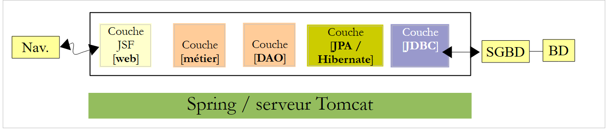 |
3.2. كيفية عمل التطبيق
سنطلق على التطبيق اسم [RdvMedecins]. فيما يلي لقطات شاشة توضح كيفية عمله.
الصفحة الرئيسية للتطبيق هي كما يلي:
 |
من هذه الصفحة الأولية، سيقوم المستخدم (موظف الاستقبال، الطبيب) بتنفيذ عدد من الإجراءات. نعرضها أدناه. يُظهر العرض الأيسر الصفحة التي يقوم المستخدم من خلالها بتقديم طلب؛ بينما يُظهر العرض الأيمن الرد المرسل من الخادم.
 |
 |
 |
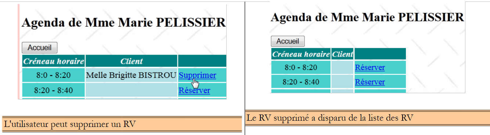 |
 |
 |
وأخيرًا، قد تظهر أيضًا صفحة خطأ:
 |
3.3. قاعدة البيانات
لنعد إلى بنية التطبيق المراد بناؤه:
 |
قاعدة البيانات، التي سنسميها [ dbrdvmedecins2]، هي قاعدة بيانات MySQL5 تحتوي على أربعة جداول:
 |
3.3.1. جدول [MEDECINS]
يحتوي على معلومات حول الأطباء الذين يديرهم تطبيق [RdvMedecins].
 |  |
- ID: رقم تعريف الطبيب — المفتاح الأساسي للجدول
- VERSION: رقم يحدد إصدار الصف في الجدول. يزداد هذا الرقم بمقدار 1 في كل مرة يتم فيها إجراء تغيير على الصف.
- LAST_NAME: لقب الطبيب
- FIRST_NAME: الاسم الأول للطبيب
- TITLE: لقبهم (السيدة، السيدة، السيد)
3.3.2. جدول [CLIENTS]
يتم تخزين عملاء الأطباء المختلفين في جدول [CLIENTS]:
 |  |
- ID: رقم تعريف العميل - المفتاح الأساسي للجدول
- VERSION: رقم يحدد إصدار الصف في الجدول. يزداد هذا الرقم بمقدار 1 في كل مرة يتم فيها إجراء تغيير على الصف.
- LAST NAME: اسم عائلة العميل
- FIRST NAME: الاسم الأول للعميل
- TITLE: لقبهم (السيدة، السيدة، السيد)
3.3.3. جدول [SLOTS]
يسرد المواعيد المتاحة:
 |
 |
- ID: رقم تعريف الفترة الزمنية - المفتاح الأساسي للجدول (الصف 8)
- VERSION: الرقم الذي يحدد إصدار الصف في الجدول. يزداد هذا الرقم بمقدار 1 في كل مرة يتم فيها إجراء تغيير على الصف.
- DOCTOR_ID: رقم التعريف الذي يحدد الطبيب الذي تنتمي إليه هذه الفترة الزمنية – مفتاح خارجي في عمود DOCTORS(ID).
- START_TIME: وقت بدء الفترة الزمنية
- MSTART: دقيقة بدء الفترة الزمنية
- HFIN: وقت انتهاء الفترة الزمنية
- MFIN: دقائق نهاية الفترة الزمنية
يشير الصف الثاني من جدول [SLOTS] (انظر [1] أعلاه)، على سبيل المثال، إلى أن الفترة رقم 2 تبدأ في الساعة 8:20 صباحًا وتنتهي في الساعة 8:40 صباحًا، وتخص الطبيبة رقم 1 (السيدة ماري بيليسييه).
3.3.4. جدول [RV]
يُدرج المواعيد المحددة لكل طبيب:
 |
- ID: معرف فريد للموعد – المفتاح الأساسي
- DAY: يوم الموعد
- SLOT_ID: فترة الموعد – مفتاح خارجي في حقل [ID] في جدول [SLOTS] – يحدد كل من فترة الموعد والطبيب المعني.
- CLIENT_ID: معرف العميل الذي تم الحجز لصالحه – مفتاح خارجي في حقل [ID] بجدول [CLIENTS]
يحتوي هذا الجدول على قيد تفرد على قيم الأعمدة المرتبطة (DAY، SLOT_ID):
إذا احتوى أحد الصفوف في جدول [RV] على القيمة (DAY1, SLOT_ID1) في العمودين (DAY, SLOT_ID)، فلا يجوز أن تظهر هذه القيمة في أي مكان آخر. وإلا، فهذا يعني أنه تم حجز موعدين في نفس الوقت لنفس الطبيب. ومن منظور برمجة Java، يقوم برنامج تشغيل JDBC الخاص بقاعدة البيانات بإصدار استثناء SQLException عند حدوث ذلك.
الصف الذي يحمل الرقم التعريفي 3 (انظر [1] أعلاه) يعني أنه تم حجز موعد للفترة رقم 20 والعميل رقم 4 في 23/08/2006. يوضح لنا جدول [SLOTS] أن الفترة رقم 20 تتوافق مع الفترة الزمنية من 4:20 مساءً إلى 4:40 مساءً وتخص الطبيبة رقم 1 (السيدة ماري بيليسييه). يخبرنا الجدول [CLIENTS] أن العميل رقم 4 هو السيدة بريجيت بيسترو.
3.3.5. إنشاء قاعدة البيانات
لإنشاء الجداول وتعبئتها، يمكنك استخدام البرنامج النصي [dbrdvmedecins2.sql]، الذي يمكن العثور عليه على موقع الأمثلة. باستخدام [WampServer] (انظر القسم 1.3.3)، تابع كما يلي:
 |
- في [1]، انقر على أيقونة [WampServer] واختر خيار [PhpMyAdmin] [2]،
- في [3]، في النافذة التي تفتح، حدد رابط [Databases]،
 |
- في [2]، قم بإنشاء قاعدة بيانات باسم [4] وترميز [5]،
- في [7]، تم إنشاء قاعدة البيانات. انقر على الرابط الخاص بها،
 |
- في [8]، قم باستيراد ملف SQL،
- الذي تختاره من نظام الملفات باستخدام الزر [9]،
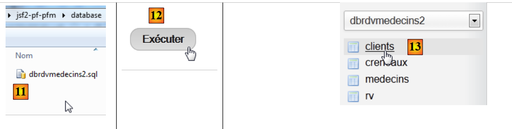 |
- في [11]، حدد البرنامج النصي SQL وفي [12] قم بتنفيذه،
- في [13]، تم إنشاء الجداول الأربعة في قاعدة البيانات. اتبع أحد الروابط،
 |
- في [14]، محتويات الجدول.
لن نعود إلى هذه القاعدة البيانات مرة أخرى. ومع ذلك، ندعو القارئ إلى متابعة تطورها عبر البرامج، خاصةً عندما لا تسير الأمور على ما يرام.
3.4. طبقات [DAO] و[JPA]
لنعد إلى البنية التي نحتاج إلى بنائها:
 |
سنقوم بإنشاء أربعة مشاريع Maven:
- مشروع واحد لطبقتي [DAO] و[JPA]،
- مشروع لطبقة [الأعمال]،
- مشروع لطبقة [الويب]،
- مشروع مؤسسي يجمع بين المشاريع الثلاثة السابقة.
سنقوم الآن بإنشاء مشروع Maven لطبقتي [DAO] و[JPA].
ملاحظة: يتطلب فهم طبقات [الأعمال] و[DAO] و[JPA] معرفة بـ Java EE. ولهذا الغرض، يمكنك الرجوع إلى [ref7] (انظر الفقرة 3).
3.4.1. مشروع NetBeans
إليك ما يجب فعله:
 |
- في [1]، نقوم بإنشاء مشروع Maven من نوع [وحدة EJB] [2]،
- في [3]، نسمي المشروع،
 |
- في [4]، نختار خادم GlassFish،
- في [5]، المشروع الذي تم إنشاؤه.
3.4.2. إنشاء طبقة [JPA]
لنعد إلى البنية التي نحتاج إلى بنائها:
 |
باستخدام NetBeans، يمكن إنشاء طبقة [JPA] وطبقة [EJB] التي تتحكم في الوصول إلى كيانات JPA التي تم إنشاؤها، بشكل تلقائي. ومن المفيد الإلمام بطرق الإنشاء التلقائي هذه، لأن الكود الذي يتم إنشاؤه يوفر معلومات قيّمة حول كيفية كتابة كيانات JPA أو كود EJB الذي يستخدمها.
سنقوم الآن بوصف بعض أدوات الإنشاء التلقائي هذه. لفهم الكود الذي تم إنشاؤه، تحتاج إلى فهم قوي لكيانات JPA [المرجع 8] و EJBs [المرجع 7] (انظر القسم 3).
3.4.2.1. إنشاء اتصال NetBeans بقاعدة البيانات
- قم بتشغيل نظام إدارة قواعد البيانات MySQL 5 حتى تصبح قاعدة البيانات متاحة،
- وقم بإنشاء اتصال NetBeans بقاعدة البيانات [dbrdvmedecins2]،
 |
- في علامة التبويب [Services] [1]، ضمن قسم [Databases] [2]، حدد برنامج تشغيل MySQL JDBC [3]،
- ثم حدد الخيار [4] "Connect Using" لإنشاء اتصال بقاعدة بيانات MySQL،
- في [5]، أدخل المعلومات المطلوبة. في [6]، اسم قاعدة البيانات؛ في [7]، مستخدم قاعدة البيانات وكلمة المرور؛
- في [8]، يمكنك اختبار المعلومات التي أدخلتها،
- في [9]، الرسالة المتوقعة إذا كانت المعلومات صحيحة،
 |
- في [10]، يتم إنشاء الاتصال. يمكنك رؤية الجداول الأربعة في قاعدة البيانات المتصلة.
3.4.2.2. إنشاء وحدة ثبات
لنعد إلى البنية التي نقوم ببنائها:
 |
نحن نقوم حالياً ببناء طبقة [JPA]. يتم تكوينها في ملف [persistence.xml] حيث يتم تعريف وحدات الاستمرارية. تتطلب كل وحدة المعلومات التالية:
- تفاصيل اتصال JDBC بالقاعدة البيانات (عنوان URL واسم المستخدم وكلمة المرور)،
- الفئات التي ستمثل جداول قاعدة البيانات،
- تنفيذ JPA المستخدم. في الواقع، JPA هي مواصفة يتم تنفيذها بواسطة منتجات مختلفة. هنا، سنستخدم EclipseLink، وهو التنفيذ الافتراضي الذي يستخدمه خادم GlassFish. وهذا يوفر علينا الحاجة إلى إضافة مكتبات من تنفيذ آخر إلى GlassFish.
يمكن لـ NetBeans إنشاء ملف الاستمرارية هذا باستخدام معالج.
 |
- انقر بزر الماوس الأيمن على المشروع واختر "إنشاء وحدة استمرارية" [1]،
- في [2]، قم بتسمية وحدة الاستمرارية التي تقوم بإنشائها،
- في [3]، حدد تطبيق EclipseLink JPA (JPA 2.0)،
- في [4]، حدد أن معاملات قاعدة البيانات ستدار بواسطة حاوية EJB لخادم GlassFish،
- في [5]، حدد أن جداول قاعدة البيانات قد تم إنشاؤها بالفعل وبالتالي لن يتم إنشاؤها،
 |
- في [6]، قم بإنشاء مصدر بيانات جديد لخادم GlassFish،
- في [7]، أدخل اسم JNDI (واجهة دليل تسمية Java)،
- في [8]، اربط هذا الاسم باتصال MySQL الذي تم إنشاؤه في الخطوة السابقة،
 |
- في [9]، أكمل المعالج،
- في [10]، المشروع الجديد،
- في [11]، تم إنشاء ملف [persistence.xml] في مجلد [META-INF]،
- في [12]، تم إنشاء مجلد [setup]،
- في [13]، تمت إضافة تبعيات جديدة إلى مشروع Maven.
الملف [META-INF/persistence.xml] الذي تم إنشاؤه هو كما يلي:
<?xml version="1.0" encoding="UTF-8"?>
<persistence version="2.0" xmlns="http://java.sun.com/xml/ns/persistence" xmlns:xsi="http://www.w3.org/2001/XMLSchema-instance" xsi:schemaLocation="http://java.sun.com/xml/ns/persistence http://java.sun.com/xml/ns/persistence/persistence_2_0.xsd">
<persistence-unit name="dbrdvmedecins2-PU" transaction-type="JTA">
<مصدر بيانات jta>jdbc/dbrdvmedecins2</مصدر بيانات jta>
<استبعاد-الفئات-غير-المدرجة>false</استبعاد-الفئات-غير-المدرجة>
<خصائص/>
</وحدة_الاستمرارية>
</وحدة_الاستمرارية>
وهي تتضمن المعلومات المقدمة في المعالج:
- السطر 3: اسم وحدة الاستمرارية،
- السطر 3: نوع معاملات قاعدة البيانات، وفي هذه الحالة معاملات JTA (واجهة برمجة تطبيقات المعاملات في Java) التي يديرها حاوية EJB3 لخادم GlassFish،
- السطر 4: اسم JNDI لمصدر البيانات.
عادةً ما يحدد هذا الملف نوع تطبيق JPA المستخدم. في المعالج، اخترنا EclipseLink. ونظرًا لأن هذا هو تطبيق JPA الافتراضي الذي يستخدمه خادم GlassFish، فإنه لم يُذكر في ملف [persistence.xml].
في علامة التبويب [Design]، يمكنك رؤية نظرة عامة على ملف [persistence.xml]:
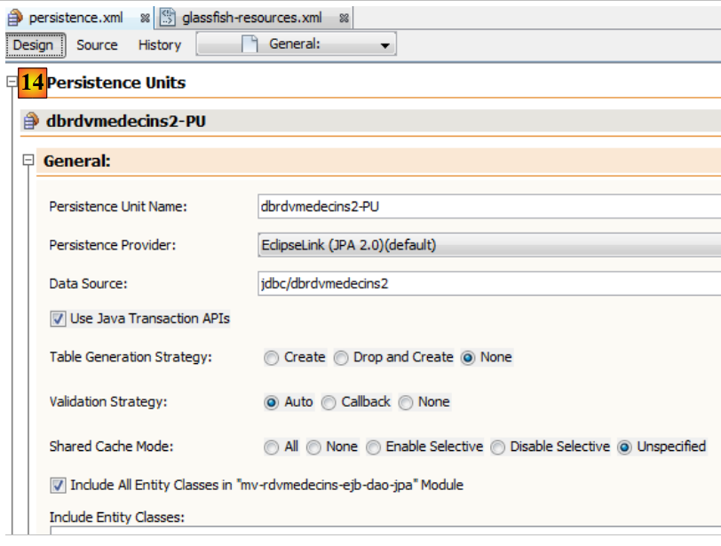 |
للحصول على سجلات EclipseLink، سنستخدم ملف [persistence.xml] التالي:
<?xml version="1.0" encoding="UTF-8"?>
<persistence version="2.0" xmlns="http://java.sun.com/xml/ns/persistence" xmlns:xsi="http://www.w3.org/2001/XMLSchema-instance" xsi:schemaLocation="http://java.sun.com/xml/ns/persistence http://java.sun.com/xml/ns/persistence/persistence_2_0.xsd">
<persistence-unit name="dbrdvmedecins2-PU" transaction-type="JTA">
<provider>org.eclipse.persistence.jpa.PersistenceProvider</provider>
<jta-data-source>jdbc/dbrdvmedecins2</jta-data-source>
<exclude-unlisted-classes>false</exclude-unlisted-classes>
<خصائص>
<property name="eclipselink.logging.level" value="FINE"/>
</properties>
</وحدة_الاستمرارية>
</استمرارية>
- السطر 4: يحدد استخدام تطبيق EclipseLink JPA،
- الأسطر 7-9: تحتوي على خصائص التكوين لمزود JPA، وهو EclipseLink في هذه الحالة،
- السطر 8: تتيح هذه الخاصية تسجيل عبارات SQL التي سيقوم EclipseLink بتنفيذها.
ملف [glassfish-resources.xml] الذي تم إنشاؤه هو كما يلي:
<?xml version="1.0" encoding="UTF-8"?>
<!DOCTYPE resources PUBLIC "-//GlassFish.org//DTD GlassFish Application Server 3.1 Resource Definitions//EN" "http://glassfish.org/dtds/glassfish-resources_1_5.dtd">
<resources>
<jdbc-connection-pool allow-non-component-callers="false" ... steady-pool-size="8" validate-atmost-once-period-in-seconds="0" wrap-jdbc-objects="false">
<property name="serverName" value="localhost"/>
<property name="portNumber" value="3306"/>
<property name="databaseName" value="dbrdvmedecins2"/>
<property name="User" value="root"/>
<property name="Password" value=""/>
<property name="URL" value="jdbc:mysql://localhost:3306/dbrdvmedecins2"/>
<property name="driverClass" value="com.mysql.jdbc.Driver"/>
</مجمع_اتصالات_jdbc>
<مورد jdbc تمكين="صحيح" اسم jndi="jdbc/dbrdvmedecins2" نوع الكائن="مستخدم" اسم المجمع="mysql_dbrdvmedecins2_rootPool"/>
</الموارد>
يحتوي هذا الملف على المعلومات التي أدخلناها في المعالجين اللذين استخدمناهما سابقًا:
- الأسطر 5–11: خصائص JDBC لقاعدة بيانات MySQL5 [dbrdvmedecins2]،
- السطر 13: اسم JNDI لمصدر البيانات.
سيُستخدم هذا الملف لإنشاء مصدر بيانات JNDI [jdbc/dbrdvmedecins2] لخادم GlassFish. وهذا خاص بهذا الخادم تحديدًا. أما بالنسبة لخادم آخر، فسيتطلب الأمر اتباع نهج مختلف، وعادةً ما يتم ذلك باستخدام أداة إدارة. وتتوفر مثل هذه الأداة أيضًا لخادم GlassFish.
وأخيرًا، تمت إضافة التبعيات إلى المشروع. وفيما يلي ملف [pom.xml]:
<project xmlns="http://maven.apache.org/POM/4.0.0" xmlns:xsi="http://www.w3.org/2001/XMLSchema-instance"
xsi:schemaLocation="http://maven.apache.org/POM/4.0.0 http://maven.apache.org/xsd/maven-4.0.0.xsd">
<modelVersion>4.0.0</modelVersion>
<groupId>istia.st</groupId>
<artifactId>mv-rdvmedecins-ejb-dao-jpa</artifactId>
<version>1.0-SNAPSHOT</version>
<تعبئة>ejb</تعبئة>
<name>mv-rdvmedecins-ejb-dao-jpa</name>
...
<التبعيات>
<التبعية>
<groupId>org.eclipse.persistence</groupId>
<معرف_المنتج>eclipselink</معرف_المنتج>
<الإصدار>2.3.0</الإصدار>
<نطاق>مقدم</نطاق>
</التبعية>
<التبعية>
<groupId>org.eclipse.persistence</groupId>
<artifactId>javax.persistence</artifactId>
<version>2.0.3</version>
<scope>مقدم</scope>
</التبعية>
<التبعية>
<groupId>org.eclipse.persistence</groupId>
<معرف_المنتج>org.eclipse.persistence.jpa.modelgen.processor</معرف_المنتج>
<الإصدار>2.3.0</الإصدار>
<scope>مقدم</scope>
</التبعية>
<التبعية>
<groupId>javax</groupId>
<معرف_المنتج>javaee-api</معرف_المنتج>
<الإصدار>6.0</الإصدار>
<scope>مقدم</scope>
</التبعية>
</التبعيات>
...
<مستودعات>
<مستودع>
<url>http://download.eclipse.org/rt/eclipselink/maven.repo/</url>
<id>eclipselink</id>
<layout>default</layout>
<name>مستودع لمكتبة Library[eclipselink]</name>
</repository>
</مستودعات>
</مشروع>
- الأسطر 32–37: تتطلب طبقة [JPA] عنصر [javaee-api]؛
- الأسطر 16 و22 و28: العناصر المطلوبة لتنفيذ JPA/EclipseLink المستخدم هنا.
- الأسطر 18 و24 و30 و36: جميع العناصر لها السمة provided. لاحظ أن هذا يعني أنها مطلوبة للتجميع ولكنها غير مطلوبة لوقت التشغيل. في الواقع، في وقت التشغيل، يتم توفيرها بواسطة خادم GlassFish،
- الأسطر 41–48: تعريف مستودع عناصر Maven جديد، حيث يمكن العثور على عناصر EclipseLink.
3.4.2.3. إنشاء كيانات JPA
يمكن إنشاء كيانات JPA باستخدام معالج NetBeans:
 |
- في [1]، قم بإنشاء كيانات JPA من قاعدة بيانات،
- في [2]، حدد مصدر البيانات الذي تم إنشاؤه مسبقًا [jdbc / dbrdvmedecins2]،
- في [3]، قائمة الجداول لمصدر البيانات هذا،
- في [4]، حددها جميعًا،
 |
- في [5]، الجداول المحددة،
- في [6]، نقوم بتسمية فئات Java المرتبطة بالجداول الأربعة،
- بالإضافة إلى اسم الحزمة [7]،
- في [8]، تقوم JPA بتجميع صفوف جداول قاعدة البيانات في مجموعات. نختار قائمة كمجموعة،
 |
- في [9]، فئات Java التي أنشأها المعالج.
3.4.2.4. كيانات JPA التي تم إنشاؤها
يمثل الكيان [Medecin] الجدول [medecins]. فئة Java مليئة بالتعليقات التوضيحية التي تجعل قراءة الكود صعبة للوهلة الأولى. إذا احتفظنا فقط بما هو ضروري لفهم دور الكيان، نحصل على الكود التالي:
package rdvmedecins.jpa;
...
@Entity
@Table(name = "medecins")
فئة عامة Medecin تنفذ Serializable {
@Id
@GeneratedValue(strategy = GenerationType.IDENTITY)
@Column(name = "ID")
رقم تعريف خاص طويل؛
@Column(name = "TITRE")
خاص String titre;
@Column(name = "NOM")
سلسلة خاصة اسم؛
@Column(name = "VERSION")
private int version;
@Column(name = "PRENOM")
خاص String الاسم_الأول؛
@OneToMany(cascade = CascadeType.ALL, mappedBy = "idMedecin")
قائمة خاصة <Creneau> creneauList;
// المصنعون
....
// أدوات الاسترجاع والتعيين
....
@Override
public int hashCode() {
...
}
@Override
public boolean equals(Object object) {
...
}
@Override
public String toString() {
...
}
}
- السطر 4: تجعل العلامة التوضيحية @Entity فئة [Medecin] كيانًا JPA، أي فئة مرتبطة بجدول قاعدة بيانات عبر واجهة برمجة تطبيقات JPA.
- السطر 5، اسم جدول قاعدة البيانات المرتبط بكيان JPA. يتوافق كل حقل في الجدول مع حقل في فئة Java،
- السطر 6: تنفذ الفئة واجهة Serializable. وهذا ضروري في تطبيقات العميل/الخادم، حيث يتم تسلسل الكيانات بين العميل والخادم.
- السطران 10-11: يتوافق حقل id في فئة [Medecin] مع حقل [ID] (السطر 10) في جدول [medecins]،
- السطران 13-14: يتوافق حقل *title* في فئة [Doctor] مع حقل [TITLE] (السطر 13) في جدول [doctors]،
- السطران 16-17: يتوافق حقل name في فئة [Doctor] مع حقل [NAME] (السطر 16) في جدول [doctors]،
- السطران 19-20: يتوافق حقل version في فئة [Medecin] مع حقل [VERSION] (السطر 19) في جدول [medecins]. هنا، لا يتعرف المعالج على أن العمود هو في الواقع عمود إصدار يجب زيادته في كل مرة يتم فيها تعديل الصف الذي ينتمي إليه. لتعيين هذا الدور له، يجب إضافة التعليق التوضيحي @Version. سنقوم بذلك في خطوة لاحقة،
- السطران 22-23: يتوافق حقل first_name في فئة [Doctor] مع حقل [FIRST_NAME] في جدول [doctors]،
- السطران 10-11: يتوافق حقل id مع المفتاح الأساسي [ID] للجدول. توضح التعليقات التوضيحية في السطرين 8-9 هذه النقطة،
- السطر 8: تشير تعليمة @Id إلى أن الحقل المُعلَّم مرتبط بالمفتاح الأساسي للجدول،
- السطر 9: ستقوم طبقة [JPA] بإنشاء المفتاح الأساسي للصفوف التي تدرجها في جدول [Doctors]. هناك عدة استراتيجيات ممكنة. هنا، تشير استراتيجية GenerationType.IDENTITY إلى أن طبقة JPA ستستخدم وضع auto_increment لجدول MySQL،
- السطران 25-26: يحتوي جدول [slots] على مفتاح خارجي مرتبط بجدول [doctors]. فكل «موعد» (slot) ينتمي إلى طبيب واحد. وبالمقابل، يرتبط كل طبيب بعدة مواعيد. لذلك لدينا علاقة واحد إلى العديد (طبيب واحد إلى العديد من الفتحات)، وهي علاقة محددة بواسطة التعليق التوضيحي @OneToMany في JPA (السطر 25). سيحتوي الحقل في السطر 26 على جميع فتحات الطبيب. يتم تحقيق ذلك دون أي برمجة. لفهم السطر 25 تمامًا، نحتاج إلى تقديم فئة [Creneau].
وهي كما يلي:
package rdvmedecins.jpa;
استيراد java.io.Serializable؛
استيراد java.util.List؛
استيراد javax.persistence.*؛
استيراد javax.validation.constraints.NotNull؛
@Entity
@Table(name = "creneaux")
فئة عامة Creneau تنفذ Serializable {
@Id
@GeneratedValue(strategy = GenerationType.IDENTITY)
@Column(name = "ID")
رقم طويل خاص؛
@Column(name = "MDEBUT")
خاص int mdebut;
@Column(name = "HFIN")
خاص int hfin;
@Column(name = "HDEBUT")
خاص int hdebut;
@Column(name = "MFIN")
خاص int mfin;
@Column(name = "VERSION")
خاص int version;
@JoinColumn(name = "ID_MEDECIN", referencedColumnName = "ID")
@ManyToOne(optional = false)
private Medecin idMedecin;
@OneToMany(cascade = CascadeType.ALL, mappedBy = "idCreneau")
قائمة خاصة <Rv> rvList;
// المصنعون
...
// متغيرات القراءة والكتابة
...
@Override
public int hashCode() {
...
}
@Override
public boolean equals(Object object) {
...
}
@Override
public String toString() {
...
}
}
نحن نعلق فقط على التعليقات التوضيحية الجديدة:
- لقد حددنا أن جدول [slots] يحتوي على مفتاح خارجي لجدول [doctors]: ترتبط كل فتحة بطبيب. يمكن ربط عدة فتحات بنفس الطبيب. لدينا علاقة من جدول [slots] إلى جدول [doctors] محددة على أنها علاقة متعددة إلى واحد (الفتحات إلى الطبيب). تُستخدم التعليقة التوضيحية @ManyToOne في السطر 32 لتعريف المفتاح الخارجي،
- السطر 31، مع التعليق التوضيحي @JoinColumn، يحدد علاقة المفتاح الأجنبي: العمود [ID_MEDECIN] في جدول [slots] هو مفتاح أجنبي في العمود [ID] في جدول [doctors]،
- السطر 33: إشارة إلى الطبيب الذي يمتلك الموعد. يتم تحقيق ذلك هنا أيضًا دون أي ترميز.
وبالتالي، يتم تنفيذ علاقة المفتاح الأجنبي بين كيان [Creneau] وكيان [Medecin] بواسطة تعليقين:
- في الكيان [Creneau]:
@JoinColumn(name = "ID_MEDECIN", referencedColumnName = "ID")
@ManyToOne(optional = false)
private Medecin idMedecin;
- في كيان [Doctor]:
@OneToMany(cascade = CascadeType.ALL, mappedBy = "idMedecin")
قائمة خاصة <Creneau> creneauList;
يعكس كلا التعليقين نفس العلاقة: علاقة المفتاح الأجنبي من جدول [Appointments] إلى جدول [Doctors]. ويقال إنهما متعاكسان. العلاقة @ManyToOne هي الوحيدة الضرورية. فهي تحدد علاقة المفتاح الأجنبي بشكل لا لبس فيه. أما العلاقة @OneToMany فهي اختيارية. إذا كانت موجودة، فإنها تشير ببساطة إلى العلاقة @ManyToOne المرتبطة بها. هذا هو معنى السمة mappedBy في السطر 1 من كيان [Doctor]. قيمة هذه السمة هي اسم الحقل في كيان [Slot] الذي يحتوي على تعليق @ManyToOne الذي يحدد المفتاح الأجنبي. وفي السطر 1 من كيان [Medecin] أيضًا، تحدد السمة cascade=CascadeType.ALL سلوك كيان [Medecin] فيما يتعلق بكيان [Creneau]:
- إذا تم إدراج كيان [Doctor] جديد في قاعدة البيانات، فيجب أيضًا إدراج كيانات [TimeSlot] الموجودة في الحقل في السطر 2،
- إذا تم تعديل كيان [Doctor] في قاعدة البيانات، فيجب أيضًا تعديل كيانات [Slot] الموجودة في الحقل في السطر 2،
- إذا تم حذف كيان [Doctor] من قاعدة البيانات، فيجب أيضًا حذف كيانات [Slot] الموجودة في الحقل في السطر 2.
نقدم الكود الخاص بالكيانين الآخرين دون أي تعليقات محددة، حيث إنهما لا يقدمان أي ترميز جديد.
كيان [Client]
package rdvmedecins.jpa;
...
@Entity
@Table(name = "clients")
فئة عامة Client تنفذ Serializable {
@Id
@GeneratedValue(strategy = GenerationType.IDENTITY)
@عمود(الاسم = "ID")
رقم طويل خاص؛
@Column(name = "TITRE")
خاص String titre;
@Column(name = "NOM")
سلسلة خاصة اسم؛
@Column(name = "VERSION")
private int version;
@Column(name = "PRENOM")
خاص String الاسم_الأول؛
@OneToMany(cascade = CascadeType.ALL, mappedBy = "idClient")
قائمة خاصة <Rv> rvList;
// المصنعون
...
// أدوات الحصول والتعيين
...
@Override
public int hashCode() {
...
}
@Override
public boolean equals(Object object) {
...
}
@Override
public String toString() {
...
}
}
- تعكس السطران 24 و25 علاقة المفتاح الخارجي بين الجدول [rv] والجدول [clients].
كيان [Rv]:
package rdvmedecins.jpa;
...
@Entity
@Table(name = "rv")
فئة عامة Rv تنفذ Serializable {
@Id
@GeneratedValue(strategy = GenerationType.IDENTITY)
@Column(name = "ID")
مُعرف خاص من نوع Long؛
@Column(name = "JOUR")
@Temporal(TemporalType.DATE)
تاريخ خاص jour;
@JoinColumn(name = "ID_CRENEAU", referencedColumnName = "ID")
@ManyToOne(optional = false)
خاص Creneau idCreneau;
@JoinColumn(name = "ID_CLIENT", referencedColumnName = "ID")
@ManyToOne(optional = false)
خاص Client idClient;
// المصنعون
...
// أدوات الحصول والتعيين
...
@Override
public int hashCode() {
...
}
@Override
public boolean equals(Object object) {
...
}
@Override
public String toString() {
...
}
}
- يحدد السطر 13 أن الحقل `jour` من نوع Java Date. ويشير إلى أن العمود [JOUR] (السطر 12) في الجدول [rv] هو من نوع التاريخ (بدون الوقت)،
- الأسطر 16–18: تحدد علاقة المفتاح الخارجي من الجدول [rv] إلى الجدول [slots]،
- الأسطر 20–22: تحدد علاقة المفتاح الخارجي من الجدول [rv] إلى الجدول [clients].
يوفر لنا الإنشاء التلقائي لكيانات JPA أساسًا عمليًا. أحيانًا يكون هذا كافيًا، وأحيانًا لا يكون كذلك. وهذا هو الحال هنا:
- نحتاج إلى إضافة تعليق @Version إلى حقول الإصدار المختلفة للكيانات،
- نحتاج إلى كتابة طرق toString تكون أكثر وضوحًا من تلك التي تم إنشاؤها،
- كيانات [Medecin] و [Client] متشابهة. سنجعلها مشتقة من فئة [Person]،
- سنقوم بإزالة العلاقات العكسية @OneToMany من العلاقات @ManyToOne. فهي ليست ضرورية وتسبب تعقيدات في البرمجة،
- نقوم بإزالة التحقق من صحة @NotNull على المفاتيح الأساسية. عند حفظ كيان JPA في MySQL، يكون للكيان في البداية مفتاح أساسي فارغ. ولا يكون للمفتاح الأساسي للكيان المحفوظ قيمة إلا بعد الحفظ في قاعدة البيانات.
مع هذه المواصفات، تصبح الفئات المختلفة كما يلي:
تُستخدم فئة Person لتمثيل الأطباء والعملاء:
package rdvmedecins.jpa;
استيراد java.io.Serializable;
استيراد javax.persistence.*;
استيراد javax.validation.constraints.NotNull؛
استيراد javax.validation.constraints.Size؛
@MappedSuperclass
فئة عامة Personne تنفذ Serializable {
private static final long serialVersionUID = 1L;
@Id
@GeneratedValue(strategy = GenerationType.IDENTITY)
@Column(name = "ID")
خاص Long id;
@Basic(optional = false)
@Size(min = 1, max = 5)
@عمود(الاسم = "العنوان")
سلسلة خاصة titre;
@Basic(optional = false)
@NotNull
@Size(الحد الأدنى = 1، الحد الأقصى = 30)
@Column(name = "NOM")
سلسلة خاصة باسم nom؛
@Basic(optional = false)
@NotNull
@عمود(الاسم = "VERSION")
@Version
private int version;
@Basic(اختياري = كاذب)
@NotNull
@Size(الحد الأدنى = 1، الحد الأقصى = 30)
@Column(name = "PRENOM")
private String prenom;
// الشركات المصنعة
...
// أدوات الاسترجاع والتعيين
...
@Override
public String toString() {
return String.format("[%s,%s,%s,%s,%s]", id, version, titre, prenom, nom);
}
}
- السطر 8: لاحظ أن فئة [Person] ليست كيانًا بحد ذاتها (@Entity). بل ستكون بمثابة الفئة الأم للكيانات. ويشير التعليق التوضيحي @MappedSuperClass إلى ذلك.
تغلف كيان [Client] صفوف جدول [clients]. وهي مشتقة من الفئة [Person] السابقة:
package rdvmedecins.jpa;
استيراد java.io.Serializable;
استيراد javax.persistence.*;
@Entity
@Table(name = "clients")
فئة عامة Client تمتد من Personne وتنفذ Serializable {
private static final long serialVersionUID = 1L;
// المصنعون
...
@Override
public int hashCode() {
...
}
@Override
public boolean equals(Object object) {
...
}
@Override
public String toString() {
return String.format("Client[%s,%s,%s,%s]", getId(), getTitre(), getPrenom(), getNom());
}
}
- السطر 6: فئة [Client] هي كيان JPA،
- السطر 7: وهي مرتبطة بجدول [clients]،
- السطر 8: وهي مشتقة من فئة [Person].
كيان [Doctor]، الذي يغلف صفوف جدول [doctors]، يتبع نفس النمط:
package rdvmedecins.jpa;
استيراد java.io.Serializable;
استيراد javax.persistence.*؛
@Entity
@Table(name = "medecins")
فئة عامة Medecin تمتد من Personne وتنفذ Serializable {
private static final long serialVersionUID = 1L;
// المصنعون
...
@Override
public int hashCode() {
...
}
@Override
public boolean equals(Object object) {
...
}
@Override
public String toString() {
return String.format("Médecin[%s,%s,%s,%s]", getId(), getTitre(), getPrenom(), getNom());
}
}
تغلف كيان [Creneau] صفوف جدول [creneaux]:
package rdvmedecins.jpa;
استيراد java.io.Serializable;
استيراد java.util.List؛
استيراد javax.persistence.*؛
استيراد javax.validation.constraints.NotNull؛
@Entity
@Table(name = "creneaux")
فئة عامة Creneau تنفذ Serializable {
private static final long serialVersionUID = 1L;
@Id
@GeneratedValue(strategy = GenerationType.IDENTITY)
@Basic(optional = false)
@Column(name = "ID")
خاص طويل id;
@Basic(optional = false)
@NotNull
@Column(name = "MDEBUT")
private int mdebut;
@Basic(optional = false)
@NotNull
@Column(name = "HFIN")
خاص int hfin;
@Basic(اختياري = كاذب)
@NotNull
@Column(name = "HDEBUT")
خاص int hdebut;
@Basic(اختياري = كاذب)
@NotNull
@Column(name = "MFIN")
خاص int mfin;
@Basic(اختياري = كاذب)
@NotNull
@Column(name = "VERSION")
@Version
خاص int version;
@JoinColumn(name = "ID_MEDECIN", referencedColumnName = "ID")
@ManyToOne(optional = false)
طبيب خاص medecin;
// المصنعون
...
// متغيرات القراءة والكتابة
...
@Override
public int hashCode() {
...
}
@Override
public boolean equals(Object object) {
// TODO: تحذير - لن تعمل هذه الطريقة في حالة عدم تعيين حقول المعرف
...
}
@Override
public String toString() {
return String.format("Creneau [%s, %s, %s:%s, %s:%s,%s]", id, version, hdebut, mdebut, hfin, mfin, medecin);
}
}
- توضح الأسطر 45–47 العلاقة "متعددة إلى واحد" بين جدول [slots] وجدول [doctors] في قاعدة البيانات: لكل طبيب عدة فترات زمنية، وتخص كل فترة زمنية طبيبًا واحدًا.
تغلف الكيان [Rv] صفوف جدول [rv]:
package rdvmedecins.jpa;
استيراد java.io.Serializable؛
استيراد java.util.Date؛
استيراد javax.persistence.*؛
استيراد javax.validation.constraints.NotNull؛
@Entity
@Table(name = "rv")
فئة عامة Rv تنفذ Serializable {
private static final long serialVersionUID = 1L;
@Id
@GeneratedValue(strategy = GenerationType.IDENTITY)
@Basic(optional = false)
@Column(name = "ID")
خاص طويل id;
@Basic(optional = false)
@NotNull
@Column(name = "JOUR")
@Temporal(TemporalType.DATE)
تاريخ خاص jour;
@JoinColumn(name = "ID_CRENEAU", referencedColumnName = "ID")
@ManyToOne(optional = false)
خاص Creneau creneau;
@JoinColumn(name = "ID_CLIENT", referencedColumnName = "ID")
@ManyToOne(optional = false)
خاص Client client;
// الشركات المصنعة
...
// أدوات الاسترجاع والتعيين
...
@Override
public int hashCode() {
...
}
@Override
public boolean equals(Object object) {
...
}
@Override
public String toString() {
return String.format("Rv[%s, %s, %s]", id, creneau, client);
}
}
- تصور الأسطر 29–31 العلاقة "متعددة إلى واحد" بين جدول [rv] وجدول [clients] (يمكن أن يظهر العميل في عدة إدخالات Rv) في قاعدة البيانات، وتصور الأسطر 25–27 العلاقة "متعددة إلى واحد" بين جدول [rv] وجدول [slots] (يمكن أن تظهر الفتحة في عدة Rv).
3.4.3. فئة الاستثناء
 |
فئة الاستثناءات الخاصة بالتطبيق [ RdvMedecinsException] هي كما يلي:
package rdvmedecins.exceptions;
استيراد java.io.Serializable؛
استيراد javax.ejb.ApplicationException؛
@ApplicationException(rollback=true)
فئة عامة RdvMedecinsException تمتد من RuntimeException وتنفذ Serializable{
// الحقول الخاصة
private int code = 0;
// المصنعون
public RdvMedecinsException() {
super();
}
public RdvMedecinsException(String message) {
super(message);
}
public RdvMedecinsException(String message, Throwable cause) {
super(message, cause);
}
public RdvMedecinsException(Throwable cause) {
super(cause);
}
public RdvMedecinsException(String message, int code) {
super(message);
setCode(code);
}
public RdvMedecinsException(Throwable cause, int code) {
super(cause);
setCode(code);
}
public RdvMedecinsException(String message, Throwable cause, int code) {
super(message, cause);
setCode(code);
}
// متغيرات القراءة والكتابة
public int getCode() {
return code;
}
public void setCode(int code) {
this.code = code;
}
}
- السطر 7: تمتد الفئة من فئة [RuntimeException]. لذلك، لا يشترط المُجمِّع معالجتها باستخدام كتل try/catch.
- السطر 6: يضمن التعليق التوضيحي @ApplicationException أن الاستثناء لن يتم "ابتلاعه" بواسطة [EjbException].
لفهم تعليق @ApplicationException، دعونا نراجع بنية جانب الخادم:
 |
سيتم إلقاء الاستثناء [RdvMedecinsException] بواسطة طرق EJB في طبقة [DAO] داخل حاوية EJB3 وسيتم اعتراضه بواسطة الحاوية. بدون تعليق @ApplicationException، تقوم حاوية EJB3 بتغليف الاستثناء الذي حدث داخل [EjbException] وإعادة إلقائه. قد لا ترغب في هذا التغليف وقد تفضل السماح باستثناء من النوع [RdvMedecinsException] بالخروج من حاوية EJB3. وهذا ما تسمح به علامة @ApplicationException. علاوة على ذلك، فإن السمة (rollback=true) لهذا التعليق التوضيحي توجه حاوية EJB3 بأنه في حالة حدوث استثناء من نوع [RdvMedecinsException] داخل طريقة يتم تنفيذها كجزء من معاملة مع نظام إدارة قواعد البيانات (DBMS)، يجب التراجع عن المعاملة. من الناحية الفنية، يُسمى هذا التراجع عن المعاملة.
3.4.4. EJB لطبقة [DAO]
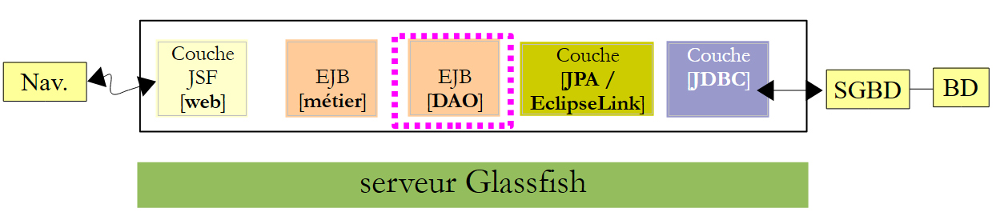 |
 |
واجهة Java [ IDao] لطبقة [DAO] هي كما يلي:
package rdvmedecins.dao;
استيراد java.util.Date؛
استيراد java.util.List؛
استيراد rdvmedecins.jpa.Client؛
استيراد rdvmedecins.jpa.Creneau؛
استيراد rdvmedecins.jpa.Medecin؛
استيراد rdvmedecins.jpa.Rv؛
واجهة عامة IDao {
// قائمة العملاء
قائمة عامة <Client> getAllClients();
// قائمة الأطباء
قائمة عامة <طبيب> getAllMedecins();
// قائمة مواعيد الأطباء
public List<Creneau> getAllCreneaux(Medecin medecin);
// قائمة مواعيد الأطباء في يوم معين
public List<Rv> getRvMedecinJour(Medecin medecin, Date jour);
// البحث عن عميل محدد برقمه التعريفي
public Client getClientById(Long id);
// البحث عن عميل محدد برقمه التعريفي
public Medecin getMedecinById(Long id);
// البحث عن Rv باستخدام معرفه
public Rv getRvById(Long id);
// البحث عن فترة زمنية محددة برقم التعريف الخاص بها
public Creneau getCreneauById(Long id);
// إضافة RV إلى القائمة
public Rv ajouterRv(Date jour, Creneau creneau, Client client);
// حذف RV
public void supprimerRv(Rv rv);
}
تم إنشاء هذه الواجهة بعد تحديد متطلبات طبقة [الويب]:
- السطر 14: قائمة العملاء. سنحتاج إلى هذا لملء القائمة المنسدلة للعملاء،
- السطر 16: قائمة الأطباء. سنحتاج إلى هذه القائمة لملء القائمة المنسدلة للأطباء،
- السطر 18: قائمة المواعيد المتاحة للطبيب. سنحتاج إلى هذه القائمة لعرض جدول مواعيد الطبيب ليوم معين،
- السطر 20: قائمة مواعيد الطبيب ليوم معين. بالاقتران مع الطريقة السابقة، سيسمح لنا هذا بعرض جدول مواعيد الطبيب ليوم معين مع المواعيد المحجوزة بالفعل،
- السطر 22: يسمح لنا بالعثور على عميل من خلال رقم هويته. ستسمح لنا هذه الطريقة بالعثور على عميل عن طريق الاختيار من القائمة المنسدلة للعملاء،
- السطر 24: نفس ما سبق بالنسبة للأطباء،
- السطر 26: يسترد موعدًا برقمه. يمكن استخدامه عند حذف موعد للتحقق مسبقًا من وجوده بالفعل،
- السطر 28: يسترد فترة زمنية برقمها. يسمح لك بتحديد الفترة التي يريد المستخدم إضافتها أو حذفها،
- السطر 30: لإضافة موعد،
- السطر 32: لحذف موعد.
الواجهة المحلية لـ EJB [IDaoLocal] مشتقة ببساطة من الواجهة السابقة [IDao]:
package rdvmedecins.dao;
استيراد javax.ejb.Local؛
@Local
واجهة عامة IDaoLocal تمتد من IDao{
}
وينطبق الأمر نفسه على الواجهة البعيدة [IDaoRemote]:
package rdvmedecins.dao;
استيراد javax.ejb.Remote;
@Remote
واجهة عامة IDaoRemote تمتد من IDao{
}
تقوم EJB [DaoJpa] بتنفيذ كل من الواجهة المحلية والواجهة البعيدة:
package rdvmedecins.dao;
...
@Singleton (mappedName="rdvmedecins.dao")
@TransactionAttribute(TransactionAttributeType.REQUIRED)
فئة عامة DaoJpa تنفذ IDaoLocal، IDaoRemote، Serializable {
- تشير السطر 5 إلى أن EJB البعيد يسمى "rdvmedecins.dao". بالإضافة إلى ذلك، تضمن علامة @Singleton (Java EE6) إنشاء مثيل واحد فقط من EJB. تحدد علامة @Stateless (Java EE5) EJB الذي يمكن إنشاؤه في مثيلات متعددة لملء تجمع EJB،
- يشير السطر 6 إلى أن جميع أساليب EJB تعمل ضمن معاملة يديرها حاوية EJB3،
- يُظهر السطر 7 أن EJB يُنفذ الواجهات المحلية والبعيدة، كما أنه قابل للتسلسل.
فيما يلي كود EJB الكامل:
package rdvmedecins.dao;
استيراد java.io.Serializable؛
استيراد java.util.Date؛
استيراد java.util.List؛
استيراد javax.ejb.Singleton؛
استيراد javax.ejb.TransactionAttribute؛
استيراد javax.ejb.TransactionAttributeType؛
استيراد javax.persistence.EntityManager؛
استيراد javax.persistence.PersistenceContext؛
استيراد rdvmedecins.exceptions.RdvMedecinsException؛
استيراد rdvmedecins.jpa.Client؛
استيراد rdvmedecins.jpa.Creneau؛
استيراد rdvmedecins.jpa.Medecin؛
استيراد rdvmedecins.jpa.Rv؛
@Singleton (mappedName="rdvmedecins.dao")
@TransactionAttribute(TransactionAttributeType.REQUIRED)
فئة عامة DaoJpa تنفذ IDaoLocal، IDaoRemote، Serializable {
@PersistenceContext
مدير الكيان الخاص em;
// قائمة العملاء
public List<Client> getAllClients() {
حاول {
return em.createQuery("select rc from Client rc").getResultList();
} catch (Throwable th) {
throw new RdvMedecinsException(th, 1);
}
}
// قائمة الأطباء
public List<Medecin> getAllMedecins() {
try {
return em.createQuery("select rm from Medecin rm").getResultList();
} catch (Throwable th) {
throw new RdvMedecinsException(th, 2);
}
}
// قائمة المواعيد المتاحة لطبيب معين
// الطبيب: الطبيب
public List<Creneau> getAllCreneaux(Medecin medecin) {
try {
return em.createQuery("select rc from Creneau rc join rc.medecin m where m.id=:idMedecin").setParameter("idMedecin", medecin.getId()).getResultList();
} catch (Throwable th) {
throw new RdvMedecinsException(th, 3);
}
}
// قائمة المواعيد لطبيب معين في يوم معين
// الطبيب: الطبيب
// اليوم: اليوم
public List<Rv> getRvMedecinJour(Medecin medecin, Date jour) {
try {
return em.createQuery("select rv from Rv rv join rv.creneau c join c.idMedecin m where m.id=:idMedecin and rv.jour=:jour").setParameter("idMedecin", medecin.getId()).setParameter("jour", jour).getResultList();
} catch (Throwable th) {
throw new RdvMedecinsException(th, 3);
}
}
// إضافة Rv
// اليوم: يوم الموعد
// creneau: فترة موعد Rv
// العميل: العميل الذي تم حجز الموعد له
public Rv ajouterRv(Date jour, Creneau creneau, Client client) {
try {
Rv rv = new Rv(null, jour);
rv.setClient(client);
rv.setCreneau(creneau);
em.persist(rv);
return rv;
} catch (Throwable th) {
throw new RdvMedecinsException(th, 4);
}
}
// حذف موعد
// rv: تم حذف Rv
public void supprimerRv(Rv rv) {
try {
em.remove(em.merge(rv));
} catch (Throwable th) {
رمي استثناء RdvMedecinsException جديد (th, 5);
}
}
// استرداد عميل معين
public Client getClientById(Long id) {
try {
return (Client) em.find(Client.class, id);
} catch (Throwable th) {
throw new RdvMedecinsException(th, 6);
}
}
// استرداد طبيب معين
public Medecin getMedecinById(Long id) {
try {
return (Medecin) em.find(Medecin.class, id);
} catch (Throwable th) {
رمي استثناء RdvMedecinsException جديد (th, 6);
}
}
// استرداد Rv معين
public Rv getRvById(Long id) {
try {
return (Rv) em.find(Rv.class, id);
} catch (Throwable th) {
رمي استثناء RdvMedecinsException جديد (th, 6);
}
}
// استرداد فتحة معينة
public Creneau getCreneauById(Long id) {
try {
return (Creneau) em.find(Creneau.class, id);
} catch (Throwable th) {
throw new RdvMedecinsException(th, 6);
}
}
}
- السطر 22: كائن EntityManager الذي يدير الوصول إلى سياق الاستمرارية. عند إنشاء مثيل للفئة، سيتم تهيئة هذا الحقل بواسطة حاوية EJB باستخدام تعليق @PersistenceContext في السطر 21،
- السطر 27: استعلام JPQL (لغة استعلام الاستمرارية في Java) الذي يُرجع جميع الصفوف من جدول [clients] كقائمة من كائنات [Client]،
- السطر 36: استعلام مشابه للأطباء،
- السطر 46: استعلام JPQL يقوم بدمج بين الجدولين [slots] و [doctors]. يتم تحديد معلماته بواسطة معرف الطبيب،
- السطر 57: استعلام JPQL يقوم بربط بين جداول [appointments] و[slots] و[doctors] ويتضمن معلمتين: معرّف الطبيب وتاريخ الموعد،
- الأسطر 69–73: إنشاء موعد ثم حفظه في قاعدة البيانات،
- السطر 83: حذف موعد من قاعدة البيانات،
- السطر 92: تنفيذ استعلام SELECT على قاعدة البيانات للعثور على عميل معين،
- السطر 101: نفس الشيء بالنسبة للطبيب،
- السطر 110: نفس الشيء بالنسبة لموعد،
- السطر 119: نفس الشيء بالنسبة لفترة زمنية،
- من المرجح أن تواجه جميع العمليات التي تستخدم سياق الاستمرارية من السطر 22 مشكلة في قاعدة البيانات. لذلك، يتم تضمينها جميعًا في كتلة try/catch. يتم تغليف أي استثناء في الاستثناء المخصص RdvMedecinsException.
3.4.5. تنفيذ برنامج تشغيل MySQL JDBC
في البنية التالية:
 |
يتطلب EclipseLink برنامج تشغيل MySQL JDBC. يجب تثبيته في مكتبات خادم GlassFish في المجلد <glassfish>/domains/domain1/lib/ext، حيث يمثل <glassfish> دليل تثبيت خادم GlassFish. ويمكن الحصول عليه على النحو التالي:
 |
المجلد الذي يجب وضع برنامج تشغيل MySQL JDBC فيه هو <مجلد Domains>[1]/domain1/lib/ext [2]. يتوفر هذا البرنامج على الرابط [http://www.mysql.fr/downloads/connector/j/]. بمجرد التثبيت، يجب إعادة تشغيل خادم GlassFish حتى يتعرف على هذه المكتبة الجديدة.
3.4.6. نشر طبقة [DAO] EJB
لنعد إلى البنية التي قمنا ببنائها حتى الآن:
 |
يجب نشر المكدس الكامل [الويب، منطق الأعمال، DAO، JPA] على خادم GlassFish. وإليك كيفية القيام بذلك:
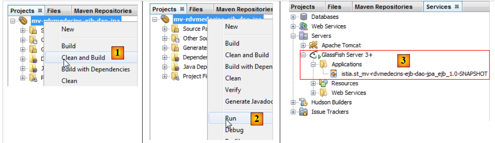 |
- في [1]، نقوم بإنشاء مشروع Maven،
- في [2]، نقوم بتشغيله،
- وفي [3]، تم نشره على خادم GlassFish (علامة التبويب [Services])
قد تكون مهتمًا بالاطلاع على سجلات GlassFish:
 |
في [1]، تتوفر سجلات GlassFish في علامة التبويب [Output / Glassfish Server 3+]. وهي كما يلي:
السطور التي تحمل علامة [Config] و [Details] هي سجلات EclipseLink؛ أما تلك التي تحمل علامة [Info] فهي من GlassFish.
- الأسطر 1–12: يقوم EclipseLink بمعالجة كيانات JPA التي اكتشفها،
- الأسطر 13–17: معلومات تشير إلى أن معالجة كيانات JPA سارت بشكل طبيعي،
- السطر 18: يبلغ EclipseLink عن وجوده،
- السطر 19: يتعرف EclipseLink على أنه يتعامل مع نظام إدارة قواعد البيانات MySQL،
- الأسطر 20–24: يحاول EclipseLink الاتصال بقاعدة البيانات،
- الأسطر 25-28: نجحت في ذلك،
- الأسطر 29-33: يحاول إعادة الاتصال، هذه المرة باستخدام منصة MySQL على وجه التحديد (السطر 30)،
- الأسطر 34–37: نجحت مرة أخرى،
- السطر 38: تأكيد إمكانية إنشاء مثيل لوحدة الاستمرارية [dbrdvmedecins-PU]،
- السطر 39: الأسماء القابلة للنقل للواجهات البعيدة والمحلية لـ EJB [DaoJpa]، حيث تعني كلمة "قابلة للنقل" أنها معترف بها من قبل جميع خوادم تطبيقات Java EE 6،
- السطر 40: أسماء الواجهات البعيدة والمحلية لـ EJB [DaoJpa]، الخاصة بـ GlassFish. في الاختبار القادم، سنستخدم الاسم "rdvmedecins.dao".
السطران 39 و 40 مهمان. عند كتابة عميل EJB على GlassFish، من الضروري معرفتهما.
3.4.7. اختبار طبقة [DAO] EJB
الآن بعد أن تم نشر EJB لطبقة [DAO] لتطبيقنا، يمكننا اختباره. سنقوم بذلك في سياق تطبيق عميل/خادم:
 |
سيقوم العميل باختبار الواجهة البعيدة لـ EJB [DAO] التي تم نشرها على خادم GlassFish.
نبدأ بإنشاء مشروع Maven جديد :
 |
- في [1]، نقوم بإنشاء مشروع جديد،
- في [2،3]، نقوم بإنشاء مشروع Maven من نوع [تطبيق Java]،
- في [4]، نسميه ونضعه في نفس المجلد الذي يوجد فيه EJB [DAO]،
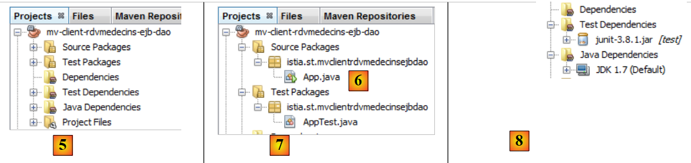 |
- في [5]، المشروع الذي تم إنشاؤه،
- في [6]، تم إنشاء فئة [App.java]. سنقوم بحذفها،
- في [7]، تم إنشاء فرع [Source Packages]. لم نواجه هذا بعد. يمكننا وضع اختبارات JUnit في هذا الفرع. سنفعل ذلك. لن نحتفظ بفئة الاختبار التي تم إنشاؤها [AppTest]،
- في [8]، تبعيات مشروع Maven. فرع [Dependencies] فارغ. سنحتاج إلى إضافة تبعيات جديدة هناك. يحتوي فرع [Test Dependencies] على التبعيات المطلوبة للاختبار. هنا، المكتبة المستخدمة هي إطار عمل JUnit 3.8. سنحتاج إلى تغييرها.
يتطور المشروع على النحو التالي:
 |
- في [1]، تم حذف الفئتين اللتين تم إنشاؤهما، إلى جانب تبعية JUnit.
لنعد إلى بنية العميل/الخادم التي سيتم استخدامها للاختبار:
 |
يحتاج العميل إلى معرفة الواجهة البعيدة التي يوفرها EJB [DAO]. بالإضافة إلى ذلك، سيتبادل كيانات JPA مع EJB. ولذلك، فإنه يحتاج إلى تعريفات هذه الكيانات. لضمان وصول مشروع اختبار EJB إلى هذه المعلومات، سنضيف مشروع EJB [DAO] كاعتماد للمشروع:
 |
- في [1]، أضف تبعية إلى فرع [Test Dependencies]،
- في [2]، حدد علامة التبويب [Open Projects]،
- في [3]، حدد مشروع EJB [DAO] Maven،
 |
- في [4]، تتم إضافة التبعية.
لنعد إلى بنية العميل/الخادم للاختبار:
 |
أثناء التشغيل، يتواصل العميل والخادم عبر شبكة TCP-IP. لن نقوم ببرمجة هذه التبادلات. لكل خادم تطبيقات، توجد مكتبة يجب دمجها في تبعيات العميل. المكتبة الخاصة بـ Glassfish تسمى [gf-client]. نضيفها:
 |
- في [1]، نضيف تبعية،
- في [2]، نحدد خصائص الأداة المطلوبة،
- في [3]، يتم إضافة عدد كبير من التبعيات. سيقوم Maven بتنزيلها. قد يستغرق ذلك عدة دقائق. ثم يتم تخزينها في مستودع Maven المحلي.
يمكننا الآن إنشاء اختبار JUnit:
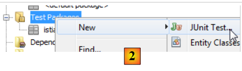 |
- في [2]، انقر بزر الماوس الأيمن على [Test Packages] لإنشاء اختبار JUnit جديد،
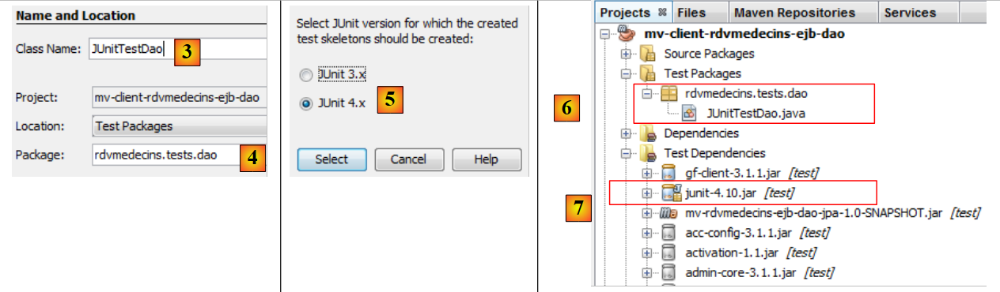 |
- في [3]، نقوم بتسمية فئة الاختبار وتحديد حزمة لها [4]،
- في [5]، حدد إطار عمل JUnit 4.x،
- في [6]، فئة الاختبار التي تم إنشاؤها،
- في [7]، تبعيات مشروع Maven الجديد.
يصبح ملف [pom.xml] كما يلي:
<project xmlns="http://maven.apache.org/POM/4.0.0" xmlns:xsi="http://www.w3.org/2001/XMLSchema-instance"
xsi:schemaLocation="http://maven.apache.org/POM/4.0.0 http://maven.apache.org/xsd/maven-4.0.0.xsd">
<modelVersion>4.0.0</modelVersion>
<groupId>istia.st</groupId>
<artifactId>mv-client-rdvmedecins-ejb-dao</artifactId>
<version>1.0-SNAPSHOT</version>
<تعبئة>jar</تعبئة>
<name>mv-client-rdvmedecins-ejb-dao</name>
<url>http://maven.apache.org</url>
<المستودعات>
<repository>
<url>http://download.eclipse.org/rt/eclipselink/maven.repo/</url>
<id>eclipselink</id>
<التخطيط>الافتراضي</التخطيط>
<name>مستودع لمكتبة Library[eclipselink]</name>
</repository>
<repository>
<url>http://repo1.maven.org/maven2/</url>
<id>junit_4</id>
<layout>default</layout>
<name>مستودع للمكتبة Library[junit_4]</name>
</repository>
</مستودعات>
<خصائص>
<project.build.sourceEncoding>UTF-8</project.build.sourceEncoding>
</خصائص>
<التبعيات>
<التبعية>
<groupId>junit</groupId>
<معرف_المنتج>junit</معرف_المنتج>
<الإصدار>4.10</الإصدار>
<نطاق>اختبار</نطاق>
</التبعية>
<التبعية>
<groupId>${project.groupId}</groupId>
<معرف_المنتج>mv-rdvmedecins-ejb-dao-jpa</معرف_المنتج>
<version>${project.version}</version>
<scope>test</scope>
</التبعية>
<dependency>
<groupId>org.glassfish.appclient</groupId>
<معرف_المنتج>gf-client</معرف_المنتج>
<الإصدار>3.1.1</الإصدار>
<نطاق>اختبار</نطاق>
</التبعية>
</التبعيات>
</project>
ملاحظة:
- الأسطر 32–51، تبعيات المشروع،
- الأسطر 13–26: تم تعريف مستودعين لـ Maven، أحدهما لـ EclipseLink (الأسطر 14–19) والآخر لـ JUnit4 (الأسطر 20–25).
ستكون فئة الاختبار كما يلي:
package rdvmedecins.tests.dao;
استيراد java.util.Date؛
استيراد java.util.List؛
استيراد javax.naming.InitialContext؛
استيراد javax.naming.NamingException؛
استيراد junit.framework.Assert؛
استيراد org.junit.BeforeClass؛
استيراد org.junit.Test؛
استيراد rdvmedecins.dao.IDaoRemote؛
استيراد rdvmedecins.jpa.Client؛
استيراد rdvmedecins.jpa.Creneau؛
استيراد rdvmedecins.jpa.Medecin؛
استيراد rdvmedecins.jpa.Rv؛
فئة عامة JUnitTestDao {
// طبقة [dao] تم اختبارها
dao خاص ثابت IDaoRemote؛
// تاريخ اليوم
Date jour = new Date();
@BeforeClass
public static void init() throws NamingException {
// تهيئة البيئة JNDI
InitialContext initialContext = new InitialContext();
// إنشاء مثيل لطبقة dao
dao = (IDaoRemote) initialContext.lookup("rdvmedecins.dao");
}
@Test
public void test1() {
// عرض العملاء
List<Client> clients =dao.getAllClients();
display("قائمة العملاء:", clients);
// عرض الأطباء
List<Medecin> medecins = dao.getAllMedecins();
display("قائمة الأطباء:", medecins);
// عرض مواعيد الأطباء
Medecin medecin = medecins.get(0);
List<Creneau> creneaux = dao.getAllCreneaux(medecin);
display(String.format("قائمة مواعيد الطبيب %s", medecin), creneaux);
// قائمة مواعيد الطبيب في يوم معين
display(String.format("قائمة مواعيد الطبيب %s، في [%s]"، medecin، jour)، dao.getRvMedecinJour(medecin، jour))؛
// إضافة موعد
Rv rv = null;
Creneau creneau = creneaux.get(2);
Client client = clients.get(0);
System.out.println(String.format("إضافة موعد في [%s] في الموعد %s للعميل %s", jour, creneau, client));
rv = dao.ajouterRv(jour, creneau, client);
System.out.println("تمت إضافة موعد");
display(String.format("قائمة مواعيد الطبيب %s، في [%s]"، medecin، jour)، dao.getRvMedecinJour(medecin، jour))؛
// إضافة موعد في نفس الفترة الزمنية في نفس اليوم
// يجب أن يؤدي إلى استثناء
System.out.println(String.format("إضافة موعد في [%s] في الفترة الزمنية %s للعميل %s", اليوم, الفترة الزمنية, العميل));
Boolean erreur = false;
try {
rv = dao.ajouterRv(jour, creneau, client);
System.out.println("تمت إضافة موعد");
} catch (Exception ex) {
Throwable th = ex;
while (th != null) {
System.out.println(ex.getMessage());
th = th.getCause();
}
// نسجل الخطأ
erreur=true;
}
// التحقق من وجود أخطاء
Assert.assertTrue(erreur);
// قائمة المواعيد
display(String.format("قائمة مواعيد الطبيب %s، في [%s]"، medecin, jour), dao.getRvMedecinJour(medecin, jour));
// حذف موعد
System.out.println("حذف موعد الطبيب المضاف");
dao.supprimerRv(rv);
System.out.println("تم حذف موعد")
display(String.format("قائمة مواعيد الطبيب %s، في [%s]"، medecin، jour)، dao.getRvMedecinJour(medecin، jour))؛
}
// طريقة مساعدة - تعرض العناصر في مجموعة
private static void display(String message, List elements) {
System.out.println(message);
for (Object element : elements) {
System.out.println(element);
}
}
}
- الأسطر 23–29: يتم تنفيذ الطريقة المُعلَّمة بـ @BeforeClass قبل جميع الطرق الأخرى. هنا، نقوم بإنشاء مرجع إلى الواجهة البعيدة لـ EJB [DaoJpa]. تذكر أننا أعطيناها اسم JNDI "rdvmedecins.dao"،
- السطور 34–35: عرض قائمة العملاء،
- السطور 37-38: عرض قائمة الأطباء،
- الأسطر 40–42: عرض الفترات الزمنية المتاحة للطبيب الأول،
- السطر 44: يعرض المواعيد للطبيب الأول في اليوم المحدد في السطر 21،
- الأسطر 46–51: إضافة موعد للطبيب الأول، للفترة الزمنية رقم 2 واليوم المحدد في السطر 21،
- السطر 52: يعرض، للتحقق، مواعيد الطبيب الأول لليوم المحدد في السطر 21. يجب أن يكون هناك موعد واحد على الأقل — وهو الموعد الذي تمت إضافته للتو،
- الأسطر 55-70: إضافة نفس الموعد. نظرًا لأن جدول [RV] يحتوي على قيد التفرد، يجب أن تؤدي هذه الإضافة إلى حدوث استثناء. نتحقق من ذلك في السطر 70،
- السطر 72: يعرض مواعيد الطبيب الأول لليوم المحدد في السطر 21 للتحقق. لا ينبغي أن يكون الموعد الذي أردنا إضافته موجودًا هناك،
- الأسطر 74–76: نحذف الموعد الوحيد الذي تمت إضافته،
- السطر 77: عرض مواعيد الطبيب الأول في اليوم المحدد في السطر 21 للتحقق. لا ينبغي أن يكون الموعد الذي حذفناه للتو موجودًا هناك.
هذا اختبار JUnit وهمي. يحتوي على تأكيد واحد فقط (السطر 70). إنه اختبار بصري مع العيوب التي تصاحبه.
إذا سارت الأمور على ما يرام، يجب أن تنجح الاختبارات:
 |
- في [1]، نقوم بإنشاء مشروع الاختبار،
- في [2]، يتم تشغيل الاختبار،
- في [3]، نجح الاختبار.
دعونا نلقي نظرة فاحصة على ناتج الاختبار:
ندعو القارئ إلى قراءة هذه السجلات جنبًا إلى جنب مع الكود الذي أنشأها. سنركز على الاستثناء الذي حدث عند إضافة موعد موجود، الأسطر 41–49. يظهر تتبع مكدس الاستثناء في الأسطر 42–48. إنه غير متوقع. لنعد إلى كود الطريقة التي تضيف موعدًا:
// إضافة Rv
// day : يوم الموعد
// creneau: فترة زمنية Rv
// customer: العميل الذي تم تحديد الموعد له
public Rv ajouterRv(Date jour, Creneau creneau, Client client) {
try {
Rv rv = new Rv(null, jour);
rv.setClient(client);
rv.setCreneau(creneau);
System.out.println(String.format("قبل الحفظ: %s", rv));
em.persist(rv);
System.out.println(String.format("بعد الحفظ: %s", rv));
return rv;
} catch (Throwable th) {
throw new RdvMedecinsException(th, 4);
}
}
دعونا نلقي نظرة على سجلات GlassFish عند إضافة الموعدين:
- السطر 2: قبل أول عملية حفظ،
- السطر 3: بعد أول أمر persist،
- السطر 4: عبارة INSERT التي سيتم تنفيذها. لاحظ أنها لا تحدث في نفس وقت عملية الحفظ. لو حدث ذلك، لظهر هذا السجل قبل السطر 2. عادةً ما تتم عملية INSERT في نهاية المعاملة التي يتم فيها تنفيذ الطريقة،
- السطر 6: يطلب EclipseLink من MySQL آخر مفتاح أساسي تم استخدامه. وسيسترد المفتاح الأساسي للموعد المضاف حديثًا. ستملأ هذه القيمة حقل id للكيان [Rv] الذي تم حفظه،
- السطران 7-8: استعلام SELECT الذي سيعرض مواعيد الطبيب،
- السطران 9-10: تظهر الشاشة للاستمرارية الثانية،
- السطران 11-12: عبارة INSERT التي سيتم تنفيذها. ومن المفترض أن تطلق استثناءً. يظهر هذا الاستثناء في السطرين 15-16 وهو واضح. يتم إطلاقه في البداية بواسطة برنامج تشغيل MySQL JDBC بسبب انتهاك القيد الفريد على المواعيد. يمكننا أن نستنتج أنه من المفترض أن نرى هذه الاستثناءات في سجلات اختبار JUnit. ومع ذلك، فإن هذا ليس هو الحال:
دعونا نراجع بنية العميل/الخادم للاختبار:
 |
عندما يرمي EJB [DAO] استثناءً، يجب تسلسله ليصل إلى العميل. من المحتمل أن تكون هذه العملية قد فشلت لسبب لم أفهمه. وبما أن تطبيقنا الكامل لن يعمل في بيئة عميل/خادم، يمكننا تجاهل هذه المشكلة.
الآن بعد أن أصبحت EJB الخاصة بطبقة [DAO] جاهزة للعمل، يمكننا الانتقال إلى EJB الخاصة بطبقة [الأعمال].
3.5. طبقة [business]
لنعد إلى بنية التطبيق الذي نقوم ببنائه:
 |
سنقوم بإنشاء مشروع Maven جديد لـ EJB [الأعمال]. كما هو موضح أعلاه، سيعتمد هذا المشروع على مشروع Maven الذي تم إنشاؤه لطبقات [DAO] و[JPA].
3.5.1. مشروع NetBeans
نحن نقوم بإنشاء مشروع Maven جديد من نوع EJB. للقيام بذلك، ما عليك سوى اتباع الإجراء الذي تم استخدامه ووصفه بالفعل في الصفحة 174.
 |
- في [1]، مشروع Maven الخاص بطبقة [الأعمال]،
- في [2]، أضف تبعية،
- في [3]، حدد مشروع Maven لطبقات [DAO] و[JPA]،
- في [4]، حدد نطاق [provided]. لاحظ أن هذا يعني أنه مطلوب للتجميع ولكن ليس لتشغيل المشروع. في الواقع، سيتم نشر EJB لطبقة [business] على خادم GlassFish جنبًا إلى جنب مع EJBs لطبقتي [DAO] و[JPA]. لذلك عند تشغيله، ستكون EJBs لطبقتي [DAO] و[JPA] موجودة بالفعل،
 |
- في [6]، المشروع الجديد مع تبعياته.
لنلقِ نظرة الآن على شفرة المصدر الخاصة بطبقة [الأعمال]:
 |
سيحتوي EJB [الأعمال] على واجهة [IMetier] التالية:
package rdvmedecins.metier.service;
استيراد java.util.Date؛
استيراد java.util.List؛
استيراد rdvmedecins.jpa.Client؛
استيراد rdvmedecins.jpa.Creneau؛
استيراد rdvmedecins.jpa.Medecin؛
استيراد rdvmedecins.jpa.Rv؛
استيراد rdvmedecins.metier.entites.AgendaMedecinJour؛
واجهة عامة IMetier {
// طبقة dao
// قائمة العملاء
قائمة عامة <Client> getAllClients();
// قائمة الأطباء
قائمة عامة <طبيب> احصل_على_جميع_الأطباء();
// قائمة مواعيد الأطباء
public List<Creneau> getAllCreneaux(Medecin medecin);
// قائمة مواعيد الأطباء في يوم معين
public List<Rv> getRvMedecinJour(Medecin medecin, Date jour);
// البحث عن عميل محدد برقمه التعريفي
public Client getClientById(Long id);
// البحث عن عميل محدد برقمه التعريفي
public Medecin getMedecinById(Long id);
// البحث عن Rv المحدد برقمه التعريفي
public Rv getRvById(Long id);
// البحث عن فترة زمنية محددة بواسطة معرفها
public Creneau getCreneauById(Long id);
// إضافة RV إلى القائمة
public Rv ajouterRv(Date jour, Creneau creneau, Client client);
// حذف موعد
public void supprimerRv(Rv rv);
// المهمة
public AgendaMedecinJour getAgendaMedecinJour(Medecin medecin, Date jour);
}
لفهم هذه الواجهة، يجب أن نستذكر بنية المشروع:
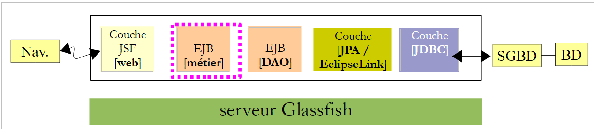 |
لقد حددنا واجهة طبقة [DAO] (القسم 3.4.4) ونصنا على أنها تلبي احتياجات طبقة [web]، أي متطلبات المستخدم. تتواصل طبقة [web] مع طبقة [DAO] فقط عبر طبقة [business]. وهذا يفسر سبب وجود جميع أساليب طبقة [DAO] في طبقة [business]. ستقوم هذه الأساليب ببساطة بتفويض الطلب من طبقة [web] إلى طبقة [DAO]. لا أكثر.
أثناء تحليل التطبيق، ظهرت متطلبات: القدرة على عرض جدول مواعيد الطبيب ليوم معين على صفحة ويب لإظهار الفترات الزمنية المحجوزة وتلك المتاحة. هذا هو الحال عادةً عندما تتلقى السكرتيرة طلبًا عبر الهاتف. يطلب المتصل موعدًا في يوم معين مع طبيب معين. لتلبية هذه الحاجة، توفر طبقة [الأعمال] الطريقة الموجودة في السطر 46.
// الوظيفة
public AgendaMedecinJour getAgendaMedecinJour(Medecin medecin, Date jour);
قد يتساءل المرء عن المكان المناسب لوضع هذه الطريقة:
- يمكن وضعها في طبقة [DAO]. ومع ذلك، فإن هذه الطريقة لا تلبي حاجة الوصول إلى البيانات بل حاجة تجارية؛
- يمكننا وضعها في طبقة [web]. لكن هذه ستكون فكرة سيئة. لأنه إذا قمنا بتغيير طبقة [web] إلى طبقة [Swing]، فسوف نفقد هذه الطريقة على الرغم من استمرار الحاجة إليها.
تأخذ الطريقة الطبيب واليوم الذي نريد جدول المواعيد له كمعلمات. وتُرجع كائن [AgendaMedecinJour] يمثل جدول الطبيب لذلك اليوم:
package rdvmedecins.metier.entites;
استيراد java.io.Serializable؛
استيراد java.text.SimpleDateFormat؛
استيراد java.util.Date؛
استيراد rdvmedecins.jpa.Medecin؛
فئة عامة AgendaMedecinJour تنفذ Serializable {
private static final long serialVersionUID = 1L;
// الحقول
private Medecin medecin;
تاريخ خاص jour;
مصفوفة خاصة CreneauMedecinJour[] creneauxMedecinJour;
// المصنعون
عام AgendaMedecinJour() {
}
public AgendaMedecinJour(Medecin medecin, Date jour, CreneauMedecinJour[] creneauxMedecinJour) {
this.medecin = medecin;
this.jour = jour;
this.creneauxMedecinJour = creneauxMedecinJour;
}
public String toString() {
StringBuffer str = new StringBuffer("");
for (CreneauMedecinJour cr : creneauxMedecinJour) {
str.append(" ");
str.append(cr.toString());
}
return String.format("Agenda[%s,%s,%s]", medecin, new SimpleDateFormat("dd/MM/yyyy").format(jour), str.toString());
}
// متغيرات القراءة والكتابة
...
}
- السطر 12: الطبيب صاحب هذا الجدول،
- السطر 13: يوم الجدول،
- السطر 14: فترات عمل الطبيب في ذلك اليوم.
- تتضمن الفئة منشئات (السطران 17 و21) بالإضافة إلى طريقة toString مخصصة (السطر 27).
فئة [DoctorTimeSlotDay] (السطر 14) هي كما يلي:
package rdvmedecins.metier.entites;
استيراد java.io.Serializable؛
استيراد rdvmedecins.jpa.Creneau؛
استيراد rdvmedecins.jpa.Rv؛
فئة عامة CreneauMedecinJour تنفذ Serializable {
private static final long serialVersionUID = 1L;
// الحقول
خاص Creneau creneau;
خاص Rv rv;
// الشركات المصنعة
public CreneauMedecinJour() {
}
public CreneauMedecinJour(Creneau creneau, Rv rv) {
this.creneau=creneau;
this.rv=rv;
}
// toString
@Override
public String toString() {
return String.format("[%s %s]", creneau, rv);
}
// متغيرات القراءة والكتابة
...
}
- السطر 12: فترة زمنية للطبيب،
- السطر 13: الموعد المرتبط، قيمة فارغة إذا كان الموعد متاحًا.
يمكننا أن نرى أن حقل creneauxMedecinJour في السطر 14 من فئة [AgendaMedecinJour] يسمح لنا باسترداد جميع فترات الوقت المتاحة للطبيب مع حالة "مشغول" أو "متاح" لكل منها. كان هذا هو الغرض من الطريقة الجديدة [getAgendaMedecinJour] في [IMetier].
سيكون لـ EJB [Metier] واجهة محلية وواجهة بعيدة تمتدان ببساطة من الواجهة الرئيسية [IMetier]:
package rdvmedecins.metier.service;
استيراد javax.ejb.Local؛
@Local
واجهة عامة IMetierLocal تمتد من IMetier{
}
حزمة rdvmedecins.metier.service;
استيراد javax.ejb.Remote;
@Remote
واجهة عامة IMetierRemote تمتد من IMetier{
}
تقوم EJB [Metier] بتنفيذ هذه الواجهات على النحو التالي:
package rdvmedecins.metier.service;
استيراد java.io.Serializable؛
استيراد java.util.Date؛
استيراد java.util.Hashtable؛
استيراد java.util.List؛
استيراد java.util.Map؛
استيراد javax.ejb.EJB؛
استيراد javax.ejb.Singleton؛
استيراد javax.ejb.TransactionAttribute؛
استيراد javax.ejb.TransactionAttributeType؛
استيراد rdvmedecins.dao.IDaoLocal؛
استيراد rdvmedecins.jpa.Client؛
استيراد rdvmedecins.jpa.Creneau؛
استيراد rdvmedecins.jpa.Medecin؛
استيراد rdvmedecins.jpa.Rv؛
استيراد rdvmedecins.metier.entites.AgendaMedecinJour؛
استيراد rdvmedecins.metier.entites.CreneauMedecinJour؛
@Singleton
@TransactionAttribute(TransactionAttributeType.REQUIRED)
فئة عامة Metier تنفذ IMetierLocal، IMetierRemote، Serializable {
// طبقة DAO
@EJB
private IDaoLocal dao;
public Metier() {
}
@Override
public List<Client> getAllClients() {
return dao.getAllClients();
}
@Override
public List<Medecin> getAllMedecins() {
return dao.getAllMedecins();
}
@Override
public List<Creneau> getAllCreneaux(Medecin medecin) {
return dao.getAllCreneaux(medecin);
}
@Override
public List<Rv> getRvMedecinJour(Medecin medecin, Date jour) {
return dao.getRvMedecinJour(medecin, jour);
}
@Override
public Client getClientById(Long id) {
return dao.getClientById(id);
}
@Override
public Medecin getMedecinById(Long id) {
return dao.getMedecinById(id);
}
@Override
public Rv getRvById(Long id) {
return dao.getRvById(id);
}
@Override
public Creneau getCreneauById(Long id) {
return dao.getCreneauById(id);
}
@Override
public Rv ajouterRv(Date jour, Creneau creneau, Client client) {
return dao.ajouterRv(jour, creneau, client);
}
@Override
public void supprimerRv(Rv rv) {
dao.supprimerRv(rv);
}
@Override
public AgendaMedecinJour getAgendaMedecinJour(Medecin medecin, Date jour) {
// قائمة المواعيد المتاحة للطبيب
List<Creneau> creneauxHoraires = dao.getAllCreneaux(medecin);
// قائمة الحجوزات لنفس الطبيب في نفس اليوم
List<Rv> reservations = dao.getRvMedecinJour(medecin, jour);
// يتم إنشاء قاموس من الحجوزات التي تم إجراؤها
Map<Long, Rv> hReservations = new Hashtable<Long, Rv>();
for (Rv resa : reservations) {
hReservations.put(resa.getCreneau().getId(), resa);
}
// إنشاء جدول الأعمال لليوم المطلوب
AgendaMedecinJour agenda = new AgendaMedecinJour();
// الطبيب
agenda.setMedecin(medecin);
// اليوم
agenda.setJour(jour);
// فترات الحجز
CreneauMedecinJour[] creneauxMedecinJour = new CreneauMedecinJour[creneauxHoraires.size()];
agenda.setCreneauxMedecinJour(creneauxMedecinJour);
// ملء فترات الحجز
for (int i = 0; i < creneauxHoraires.size(); i++) {
// السطر i في جدول الأعمال
creneauxMedecinJour[i] = new CreneauMedecinJour();
// معرف الفتحة
creneauxMedecinJour[i].setCreneau(creneauxHoraires.get(i));
// هل الفترة متاحة أم محجوزة؟
if (hReservations.containsKey(creneauxHoraires.get(i).getId())) {
// الفترة محجوزة - نسجل الحجز
Rv resa = hReservations.get(creneauxHoraires.get(i).getId());
creneauxMedecinJour[i].setRv(resa);
}
}
// نعيد النتيجة
return agenda;
}
}
- السطر 22، فئة [Metier] هي EJB فردية،
- السطر 23: تعمل كل طريقة EJB ضمن معاملة. وهذا يعني أن المعاملة تبدأ عند بداية الطريقة، في طبقة [business]. ستستدعي هذه الطبقة طرقًا في طبقة [DAO]. ستعمل هذه الطرق ضمن نفس المعاملة،
- السطر 24: يقوم EJB بتنفيذ واجهاته المحلية والبعيدة، كما أنه قابل للتسلسل،
- السطر 27: إشارة إلى EJB في طبقة [DAO]،
- السطر 29: سيتم إدخال هذا بواسطة حاوية EJB لخادم GlassFish، بفضل التعليق التوضيحي @EJB. لذلك، عند تنفيذ طرق فئة [Business]، تكون الإشارة إلى EJB في طبقة [DAO] قد تم تهيئتها،
- الأسطر 33-81: تُستخدم هذه الإشارة لتفويض المكالمة التي تم إجراؤها إلى طبقة [Business] إلى طبقة [DAO]،
- السطر 84: طريقة getAgendaMedecinJour، التي تسترد جدول مواعيد الطبيب ليوم معين. سنترك للقارئ متابعة التعليقات.
3.5.2. نشر طبقة [business]
تعتمد طبقة [business] على طبقة [DAO]. تم تنفيذ كل طبقة باستخدام EJB. لاختبار EJB [business]، نحتاج إلى نشر كلا EJBs. للقيام بذلك، نحتاج إلى مشروع مؤسسي.
 |
- [1]، قم بإنشاء مشروع جديد،
- من نوع Maven [2] وتطبيق مؤسسي [3]،
- وأعطه اسمًا [4]. سيتم إضافة اللاحقة "ear" تلقائيًا،
 |
- في [5]، نختار خادم GlassFish و Java EE 6،
- في [6]، يحتوي تطبيق المؤسسة على وحدات، وعادةً ما تكون وحدات EJB ووحدات الويب. هنا، سيحتوي تطبيق المؤسسة على وحدات EJBs التي قمنا بإنشائها. وبما أن هذه الوحدات موجودة بالفعل، فإننا لا نضع علامة في المربعات،
- في [7،8]، تم إنشاء مشروعين. [8] هو مشروع المؤسسة الذي سنستخدمه. [7] هو مشروع لا أعرف الغرض منه. لم أضطر إلى استخدامه، وبما أنني لم أتعمق في Maven، لا أعرف ما الغرض منه. لذا سنتجاهله.
الآن بعد إنشاء مشروع المؤسسة، يمكننا تحديد وحداته.
 |
- في [1]، نقوم بإنشاء تبعية جديدة،
- في [2]، نختار مشروع EJB [DAO]،
- في [3]، نعلن أنه EJB. لا تترك النوع فارغًا، لأنه في هذه الحالة سيتم استخدام نوع jar، وهذا النوع غير مناسب هنا،
- في [4]، نستخدم نطاق [compile]،
- في [5]، المشروع مع التبعية الجديدة،
 |
- في [6، 7، 8]، نكرر العملية لإضافة EJB من طبقة [business]،
- في [9]، التبعيتان،
- في [10]، نقوم ببناء المشروع،
 |
- في [11]، نقوم بتشغيله،
- في [12]، في علامة التبويب [Services]، نرى أن المشروع قد تم نشره على خادم GlassFish. وهذا يعني أن كلا EJBs موجودان الآن على الخادم.
في سجلات خادم GlassFish، يمكنك العثور على معلومات حول نشر كائني EJB:
 |
- في [1]، علامة تبويب سجلات GlassFish.
توجد السجلات التالية هناك:
- الأسطر 1-5: تم التعرف على كيانات JPA،
- السطر 7: يشير إلى أن وحدة الاستمرارية [dbrdvmedecins2-PU] تم إنشاؤها بنجاح وأن الاتصال بقاعدة البيانات المرتبطة بها قد تم إقامته،
- السطر 8: الأسماء القابلة للنقل للواجهات البعيدة والمحلية لـ EJB [DaoJpa]. "قابلة للنقل" تعني معترف بها من قبل جميع خوادم التطبيقات،
- السطر 9: نفس الشيء ولكن بأسماء خاصة بـ GlassFish،
- السطران 10-11: نفس الشيء بالنسبة لـ EJB [Metier].
سنستخدم الاسم القابل للنقل للواجهة البعيدة لـ EJB [Metier]:
java:global/istia.st_mv-rdvmedecins-metier-dao-ear_ear_1.0-SNAPSHOT/mv-rdvmedecins-ejb-metier-1.0-SNAPSHOT/Metier!rdvmedecins.metier.service.IMetierRemote
سنحتاج إلى هذا عند اختبار طبقة [الأعمال].
3.5.3. اختبار طبقة [الأعمال]
كما فعلنا مع طبقة [DAO]، سنقوم باختبار طبقة [الأعمال] كجزء من تطبيق عميل/خادم:
 |
سيقوم العميل باختبار الواجهة البعيدة لـ EJB [الأعمال] التي تم نشرها على خادم GlassFish.
نبدأ بإنشاء مشروع Maven جديد. للقيام بذلك، نتبع نفس الإجراء المستخدم لإنشاء مشروع اختبار طبقة [DAO] (انظر القسم 3.4.7)، باستثناء إنشاء اختبار JUnit. ويكون المشروع الناتج كما يلي
 |
- [1] يوضح المشروع الذي تم إنشاؤه مع تبعياته: فيما يتعلق بـ EJB لطبقة [DAO]، و EJB لطبقة [Business]، ومكتبة [gf-client].
في هذه المرحلة، يكون ملف [pom.xml] الخاص بالمشروع كما يلي:
<project xmlns="http://maven.apache.org/POM/4.0.0" xmlns:xsi="http://www.w3.org/2001/XMLSchema-instance"
xsi:schemaLocation="http://maven.apache.org/POM/4.0.0 http://maven.apache.org/xsd/maven-4.0.0.xsd">
<modelVersion>4.0.0</modelVersion>
<groupId>istia.st</groupId>
<artifactId>mv-client-rdvmedecins-ejb-metier</artifactId>
<version>1.0-SNAPSHOT</version>
<تعبئة>jar</تعبئة>
<name>mv-client-rdvmedecins-ejb-metier</name>
<url>http://maven.apache.org</url>
<خصائص>
<project.build.sourceEncoding>UTF-8</project.build.sourceEncoding>
</properties>
<التبعيات>
<التبعية>
<groupId>org.glassfish.appclient</groupId>
<معرف_المنتج>gf-client</معرف_المنتج>
<version>3.1.1</version>
</التبعية>
<التبعية>
<معرف_المجموعة>${project.groupId}</معرف_المجموعة>
<معرف_المنتج>mv-rdvmedecins-ejb-dao-jpa</معرف_المنتج>
<الإصدار>${project.version}</الإصدار>
</التبعية>
<التبعية>
<groupId>${project.groupId}</groupId>
<artifactId>mv-rdvmedecins-ejb-metier</artifactId>
<الإصدار>${project.version}</الإصدار>
</التبعية>
</التبعيات>
</project>
تأكد من وجود التبعيات الموضحة في الأسطر 17–33. سيكون الاختبار عبارة عن فئة وحدة تحكم بسيطة:
 |
فيما يلي كود فئة [ClientRdvMedecinsMetier]:
package istia.st.client;
استيراد java.util.Date؛
استيراد java.util.List؛
استيراد javax.naming.InitialContext؛
استيراد rdvmedecins.jpa.Client؛
استيراد rdvmedecins.jpa.Creneau؛
استيراد rdvmedecins.jpa.Medecin؛
استيراد rdvmedecins.jpa.Rv؛
استيراد rdvmedecins.metier.entites.AgendaMedecinJour؛
استيراد rdvmedecins.metier.service.IMetierRemote؛
فئة عامة ClientRdvMedecinsMetier {
// اسم الواجهة البعيدة لـ EJB [Metier]
IDaoRemoteName = "java:global/istia.st_mv-rdvmedecins-metier-dao-ear_ear_1.0-SNAPSHOT/mv-rdvmedecins-ejb-metier-1.0-SNAPSHOT/Metier!rdvmedecins.metier.service.IMetierRemote";
// تاريخ اليوم
private static Date jour = new Date();
public static void main(String[] args) {
try {
// سياق JNDI لخادم Glassfish
InitialContext initialContext = new InitialContext();
// مرجع على طبقة [metier] البعيدة
IMetierRemote metier = (IMetierRemote) initialContext.lookup(IDaoRemoteName);
// عرض العملاء
List<Client> clients = metier.getAllClients();
display("قائمة العملاء:", clients);
// عرض الأطباء
List<Medecin> medecins = metier.getAllMedecins();
display("قائمة الأطباء:", medecins);
// عرض مواعيد الأطباء
Medecin medecin = medecins.get(0);
List<Creneau> creneaux = metier.getAllCreneaux(medecin);
display(String.format("قائمة مواعيد الطبيب %s", medecin), creneaux);
// قائمة مواعيد الطبيب في يوم معين
display(String.format("قائمة مواعيد الطبيب %s، في [%s]"، medecin، jour)، metier.getRvMedecinJour(medecin، jour))؛
// عرض التقويم
AgendaMedecinJour agenda = metier.getAgendaMedecinJour(medecin, jour);
System.out.println(agenda);
// إضافة موعد إلى القائمة
Rv rv = null;
Creneau creneau = creneaux.get(2);
Client client = clients.get(0);
System.out.println(String.format("Ajout d'un Rv le [%s] dans le créneau %s pour le client %s", jour, creneau, client));
rv = metier.ajouterRv(jour, creneau, client);
System.out.println("تمت إضافة موعد");
display(String.format("قائمة مواعيد الطبيب %s، في [%s]"، medecin، jour)، metier.getRvMedecinJour(medecin، jour))؛
// عرض التقويم
agenda = metier.getAgendaMedecinJour(medecin, jour);
System.out.println(agenda);
// حذف موعد
System.out.println("حذف الموعد المضاف");
metier.supprimerRv(rv);
System.out.println("تم حذف موعد")
display(String.format("قائمة مواعيد الطبيب %s، في [%s]"، medecin، jour)، metier.getRvMedecinJour(medecin، jour))؛
// عرض التقويم
agenda = metier.getAgendaMedecinJour(medecin, jour);
System.out.println(agenda);
} catch (Throwable ex) {
System.out.println("خطأ...");
while (ex != null) {
System.out.println(String.format("%s : %s", ex.getClass().getName(), ex.getMessage()));
ex = ex.getCause();
}
}
}
// طريقة مساعدة - تعرض العناصر الموجودة في مجموعة
private static void display(String message, List elements) {
System.out.println(message);
for (Object element : elements) {
System.out.println(element);
}
}
}
- السطر 18: تم أخذ الاسم القابل للنقل للواجهة البعيدة لـ EJB [Metier] من سجلات GlassFish،
- الأسطر 24–27: تم الحصول على مرجع للواجهة البعيدة لـ EJB [Metier]،
- السطران 29-30: عرض العملاء،
- السطور 32–33: عرض الأطباء،
- الأسطر 35-37: عرض الفترات الزمنية المتاحة للطبيب،
- السطر 39: عرض مواعيد الطبيب في يوم معين،
- الأسطر 41-42: جدول مواعيد هذا الطبيب في اليوم نفسه،
- الأسطر 44-49: إضافة موعد،
- السطر 50: يعرض مواعيد الطبيب. يجب أن يكون هناك سطر آخر،
- السطور 52-53: تعرض جدول مواعيد الطبيب. يجب أن يكون الموعد المضاف مرئيًا،
- الأسطر 55-57: حذف الموعد الذي أضفته للتو،
- السطر 58: يجب أن ينعكس ذلك في قائمة مواعيد الطبيب،
- السطران 60-61: وفي تقويمهم.
نجري الاختبار:
 | 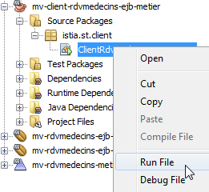 |
تظهر الشاشة الناتجة على النحو التالي:
قائمة العملاء:
العميل[1،السيد،جول،مارتن]
العميل[2، السيدة، كريستين، جيرمان]
العميل[3، السيد، جول، جاكارد]
العميل[4،الآنسة،بريجيت،بيسترو]
قائمة الأطباء:
الطبيب[1، السيدة ماري بيليسييه]
طبيب[2، السيد جاك برومارد]
الطبيب [3، السيد فيليب جاندو]
الطبيب[4، الآنسة جوستين جاكومو]
قائمة مواعيد الطبيب الطبيبة [1، السيدة ماري بيليسييه]
الموعد [1، 1، 8:00، 8:20، الطبيبة [1، السيدة ماري بيليسييه]]
الموعد [2، 1، 8:20، 8:40، الطبيب [1، السيدة ماري بيليسييه]]
الموعد [3، 1، 8:40، 9:0، الطبيب [1، السيدة ماري بيليسييه]]
كرينو [4، 1، 9:0، 9:20، الطبيب [1، السيدة ماري بيليسييه]]
كرينو [5، 1، 9:20، 9:40، الطبيب [1، السيدة ماري بيليسييه]]
كرينو [6، 1، 9:40، 10:0، الطبيب [1، السيدة ماري بيليسييه]]
كرينو [7، 1، 10:00، 10:20، الطبيب [1، السيدة ماري بيليسييه]]
كرينو [8، 1، 10:20، 10:40، الطبيب [1، السيدة ماري بيليسييه]]
كرينو [9، 1، 10:40، 11:0، الطبيب [1، السيدة ماري بيليسييه]]
كرينو [10، 1، 11:00، 11:20، الطبيب [1، السيدة ماري بيليسييه]]
كرينو [11، 1، 11:20، 11:40، الطبيب [1، السيدة ماري بيليسييه]]
كرينو [12، 1، 11:40، 12:0، الطبيب [1، السيدة ماري بيليسييه]]
كرينو [13، 1، 14:0، 14:20، الطبيب [1، السيدة ماري بيليسييه]]
كرينو [14، 1، 14:20، 14:40، الطبيبة [1، السيدة ماري بيليسييه]]
كرينو [15، 1، 14:40، 15:0، الطبيب [1، السيدة ماري بيليسييه]]
كرينو [16، 1، 15:0، 15:20، الطبيب [1، السيدة ماري بيليسييه]]
كرينو [17، 1، 15:20، 15:40، الطبيبة [1، السيدة ماري بيليسييه]]
كرينو [18، 1، 15:40، 16:0، الطبيب [1، السيدة ماري بيليسييه]]
كرينو [19، 1، 16:0، 16:20، الطبيب [1، السيدة ماري بيليسييه]]
كرينو [20، 1، 16:20، 16:40، الطبيبة [1، السيدة ماري بيليسييه]]
كرينو [21، 1، 16:40، 17:0، الطبيب [1، السيدة ماري بيليسييه]]
كرينو [22، 1، 17:0، 17:20، الطبيب [1، السيدة ماري بيليسييه]]
كرينو [23، 1، 17:20، 17:40، الطبيبة [1، السيدة ماري بيليسييه]]
الموعد [24، 1، 17:40، 18:0، الطبيبة [1، السيدة ماري بيليسييه]]
قائمة مواعيد الطبيبة الطبيبة [1، السيدة ماري بيليسييه]، يوم [الأربعاء 23 مايو 16:25:26 بتوقيت وسط أوروبا الصيفي 2012]
جدول الأعمال [الطبيب [1، السيدة ماري بيليسييه]، 23/05/2012، [الموعد [1، 1، 8:0، 8:20، الطبيب [1، السيدة ماري بيليسييه]] null] [Creneau [2، 1، 8:20، 8:40، الطبيب [1، السيدة ماري بيليسييه]] null] [Creneau [3، 1، 8:40، 9:0، الطبيب [1، السيدة ماري بيليسييه]] null] [كرينو [4، 1، 9:0، 9:20، الطبيب [1، السيدة ماري بيليسييه]] لا شيء] [كرينو [5، 1، 9:20، 9:40، الطبيب [1، السيدة ماري بيليسييه]] لا شيء] [كرينو [6، 1، 9:40، 10:0، الطبيب [1، السيدة ماري بيليسييه]] فارغ] [كرينو [7، 1، 10:0، 10:20، الطبيب [1، السيدة ماري بيليسييه]] فارغ] [كرينو [8، 1، 10:20، 10:40، الطبيب [1، السيدة ماري بيليسييه]] null] [كرينو [9، 1، 10:40، 11:0، الطبيب [1، السيدة ماري بيليسييه]] null] [كرينو [10، 1، 11:00، 11:20، الطبيب [1، السيدة ماري بيليسييه]] null] [كرينو [11، 1، 11:20، 11:40، الطبيب [1، السيدة ماري بيليسييه]] null] [Creneau [12, 1, 11:40, 12:0,Médecin[1,Mme,Marie,PELISSIER]] null] [Creneau [13, 1, 14:0, 14:20,Médecin[1,Mme,Marie,PELISSIER]] null] [كرينو [14، 1، 14:20، 14:40، الطبيب [1، السيدة، ماري، بيليسييه]] null] [كرينو [15، 1، 14:40، 15:0، الطبيب [1، السيدة، ماري، بيليسييه]] null] [Creneau [16, 1, 15:0, 15:20,Médecin[1,Mme,Marie,PELISSIER]] null] [Creneau [17, 1, 15:20, 15:40,Médecin[1,Mme,Marie,PELISSIER]] null] [Creneau [18, 1, 15:40, 16:0,Médecin[1,Mme,Marie,PELISSIER]] null] [Creneau [19, 1, 16:0, 16:20,Médecin[1,Mme,Marie,PELISSIER]] null] [كرينو [20، 1، 16:20، 16:40، الطبيب [1، السيدة، ماري، بيليسييه]] null] [كرينو [21، 1، 16:40، 17:0، الطبيب [1، السيدة، ماري، بيليسييه]] null] [Creneau [22, 1, 17:0, 17:20,Médecin[1,Mme,Marie,PELISSIER]] null] [Creneau [23, 1, 17:20, 17:40,Médecin[1,Mme,Marie,PELISSIER]] null] [Creneau [24, 1, 17:40, 18:0,Médecin[1,Mme,Marie,PELISSIER]] null]]
إضافة موعد في [الأربعاء 23 مايو 16:25:26 CEST 2012] في الفترة الزمنية Creneau [3, 1, 8:40, 9:0,Médecin[1,Mme,Marie,PELISSIER]] للعميل Client[1,Mr,Jules,MARTIN]
تمت إضافة الموعد
قائمة مواعيد الطبيب الطبيب[1، السيدة ماري بيليسييه]، في [الأربعاء 23 مايو 16:25:26 بتوقيت وسط أوروبا الصيفي 2012]
موعد [252، فترة [3، 1، 8:40، 9:0، الطبيبة [1، السيدة ماري بيليسييه]، العميل [1، السيد جول مارتن]]
جدول الأعمال[الطبيبة [1، السيدة ماري بيليسييه]، 23/05/2012، [كرينو [1، 1، 8:0، 8:20، الطبيبة [1، السيدة ماري بيليسييه]] لا شيء] [Creneau [2, 1, 8:20, 8:40, الطبيب [1, السيدة ماري بيليسييه]] null] [Creneau [3, 1, 8:40, 9:0، الطبيب [1، السيدة ماري بيليسييه]] Rv[252، كرينو [3، 1، 8:40، 9:0، الطبيب [1، السيدة ماري بيليسييه]، العميل [1، السيد جول مارتن]]] [Creneau [4, 1, 9:0, 9:20,Médecin[1,Mme,Marie,PELISSIER]] null] [Creneau [5, 1, 9:20, 9:40,Médecin[1,Mme,Marie,PELISSIER]] null] [كرينو [6، 1، 9:40، 10:0، طبيب [1، السيدة ماري بيليسييه]] لا شيء] [كرينو [7، 1، 10:0، 10:20، طبيب [1، السيدة ماري بيليسييه]] لا شيء] [كرينو [8، 1، 10:20، 10:40، الطبيب [1، السيدة ماري بيليسييه]] null] [كرينو [9، 1، 10:40، 11:0، الطبيب [1، السيدة ماري بيليسييه]] null] [كرينو [10، 1، 11:00، 11:20، الطبيب [1، السيدة ماري بيليسييه]] null] [كرينو [11، 1، 11:20، 11:40، الطبيب [1، السيدة ماري بيليسييه]] null] [Creneau [12, 1, 11:40, 12:0,Médecin[1,Mme,Marie,PELISSIER]] null] [Creneau [13, 1, 14:0, 14:20,Médecin[1,Mme,Marie,PELISSIER]] null] [كرينو [14، 1، 14:20، 14:40، الطبيب [1، السيدة، ماري، بيليسييه]] null] [كرينو [15، 1، 14:40، 15:0، الطبيب [1، السيدة، ماري، بيليسييه]] null] [Creneau [16, 1, 15:0, 15:20,Médecin[1,Mme,Marie,PELISSIER]] null] [Creneau [17, 1, 15:20, 15:40,Médecin[1,Mme,Marie,PELISSIER]] null] [Creneau [18, 1, 15:40, 16:0,Médecin[1,Mme,Marie,PELISSIER]] null] [Creneau [19, 1, 16:0, 16:20,Médecin[1,Mme,Marie,PELISSIER]] null] [كرينو [20، 1، 16:20، 16:40، الطبيب [1، السيدة، ماري، بيليسييه]] null] [كرينو [21، 1، 16:40، 17:0، الطبيب [1، السيدة، ماري، بيليسييه]] null] [كرينو [22، 1، 17:0، 17:20، الطبيب [1، السيدة ماري بيليسييه]] null] [كرينو [23، 1، 17:20، 17:40، الطبيب [1، السيدة ماري بيليسييه]] null] [كرينو [24، 1، 17:40، 18:0، الطبيب [1، السيدة ماري بيليسييه]] لا شيء]]
حذف الموعد المضاف
تم حذف الموعد
قائمة مواعيد الطبيب الطبيب [1، السيدة ماري بيليسييه]، في [الأربعاء 23 مايو 16:25:26 بتوقيت وسط أوروبا الصيفي 2012]
جدول الأعمال[طبيبة[1، السيدة ماري بيليسييه]، 23/05/2012، [كرينو [1، 1، 8:00، 8:20، طبيبة[1، السيدة ماري بيليسييه]] null] [كرينو [2، 1، 8:20، 8:40، الطبيبة [1، السيدة ماري بيليسييه]] لا شيء] [كرينو [3، 1، 8:40، 9:0، الطبيبة [1، السيدة ماري بيليسييه]] لا شيء] [كرينو [4، 1، 9:0، 9:20، الطبيب [1، السيدة ماري بيليسييه]] لا شيء] [كرينو [5، 1، 9:20، 9:40، الطبيب [1، السيدة ماري بيليسييه]] لا شيء] [Creneau [6, 1, 9:40, 10:0,Médecin[1,Mme,Marie,PELISSIER]] null] [Creneau [7, 1, 10:0, 10:20,Médecin[1,Mme,Marie,PELISSIER]] null] [Creneau [8, 1, 10:20, 10:40,Médecin[1,Mme,Marie,PELISSIER]] null] [Creneau [9, 1, 10:40, 11:0,Médecin[1,Mme,Marie,PELISSIER]] null] [كرينو [10، 1، 11:00، 11:20، الطبيب [1، السيدة ماري بيليسييه]] null] [كرينو [11، 1، 11:20، 11:40، الطبيب [1، السيدة ماري بيليسييه]] null] [Creneau [12, 1, 11:40, 12:0,Médecin[1,Mme,Marie,PELISSIER]] null] [Creneau [13, 1, 14:0, 14:20,Médecin[1,Mme,Marie,PELISSIER]] null] [كرينو [14، 1، 14:20، 14:40، الطبيب [1، السيدة، ماري، بيليسييه]] null] [كرينو [15، 1، 14:40، 15:0، الطبيب [1، السيدة، ماري، بيليسييه]] null] [Creneau [16, 1, 15:0, 15:20,Médecin[1,Mme,Marie,PELISSIER]] null] [Creneau [17, 1, 15:20, 15:40,Médecin[1,Mme,Marie,PELISSIER]] null] [Creneau [18, 1, 15:40, 16:0,Médecin[1,Mme,Marie,PELISSIER]] null] [Creneau [19, 1, 16:0, 16:20,Médecin[1,Mme,Marie,PELISSIER]] null] [كرينو [20، 1، 16:20، 16:40، الطبيب [1، السيدة، ماري، بيليسييه]] null] [كرينو [21، 1، 16:40، 17:0، الطبيب [1، السيدة، ماري، بيليسييه]] null] [كرينو [22، 1، 17:0، 17:20، الطبيب [1، السيدة ماري بيليسييه]] null] [كرينو [23، 1، 17:20، 17:40، الطبيب [1، السيدة ماري بيليسييه]] null] [كرينو [24، 1، 17:40، 18:0، الطبيب [1، السيدة ماري بيليسييه]] لا شيء]]
- السطر 37: جدول السيدة بيليسييه، 23 مايو 2012. لم يتم حجز أي مواعيد،
- السطر 39: إضافة موعد،
- السطر 42: الجدول الجديد للسيدة بيليسييه. تم حجز موعد الآن للسيد مارتن،
- السطر 44: تم حذف الموعد،
- السطر 46: يظهر تقويم السيدة بيليسييه أنه لم يتم حجز أي موعد.
نعتبر الآن طبقتي [CAD] و[business] جاهزتين للعمل. ما زلنا بحاجة إلى كتابة طبقة [web] باستخدام إطار عمل JSF. للقيام بذلك، سنستخدم المعرفة المكتسبة في بداية هذا المستند.
3.6. طبقة [الويب]
لنعد إلى البنية قيد الإنشاء حاليًا:
 |
سنقوم ببناء الطبقة النهائية، وهي طبقة [الويب].
3.6.1. مشروع NetBeans
نحن نبني مشروع Maven:
 |
- في [1]، نقوم بإنشاء مشروع جديد،
- في [2، 3]، مشروع Maven من نوع [تطبيق ويب]،
- في [4]، نسميه،
 |
- في [5]، حدد خادم GlassFish و Java EE 6 Web،
- في [6]، المشروع الذي تم إنشاؤه،
- في [7]، المشروع بعد إزالة الصفحة [index.jsp] والحزمة في [Source Packages]،
 |
- في [8، 9]، في خصائص المشروع، أضف إطار عمل،
- في [10]، حدد Java Server Faces،
 |
- في [11]، تكوين Java Server Faces. اترك القيم الافتراضية. لاحظ أنه يتم استخدام JSF 2،
- في [12]، يتم تعديل المشروع بعد ذلك بطريقتين: يتم إنشاء ملف [web.xml]، بالإضافة إلى صفحة [index.html].
ملف [web.xml] هو كما يلي:
<?xml version="1.0" encoding="UTF-8"?>
<web-app version="3.0" xmlns="http://java.sun.com/xml/ns/javaee" xmlns:xsi="http://www.w3.org/2001/XMLSchema-instance" xsi:schemaLocation="http://java.sun.com/xml/ns/javaee http://java.sun.com/xml/ns/javaee/web-app_3_0.xsd">
<context-param>
<param-name>javax.faces.PROJECT_STAGE</param-name>
<param-value>Development</param-value>
</context-param>
<servlet>
<servlet-name>Faces Servlet</servlet-name>
<servlet-class>javax.faces.webapp.FacesServlet</servlet-class>
<تحميل عند بدء التشغيل>1</تحميل عند بدء التشغيل>
</servlet>
<تعيين-الخادم>
<servlet-name>Faces Servlet</servlet-name>
<url-pattern>/faces/*</url-pattern>
</تعيين-الخادم>
<تكوين-الجلسة>
<session-timeout>
30
</مؤقت-الجلسة>
</تكوين-الجلسة>
<قائمة ملفات الترحيب>
<ملف الترحيب>faces/index.xhtml</ملف الترحيب>
</قائمة-ملفات-الترحيب>
</تطبيق-ويب>
لقد صادفنا هذا الملف من قبل.
- الأسطر 7–11: تحدد السيرفلت الذي سيتولى معالجة جميع الطلبات الموجهة إلى التطبيق. هذا هو سيرفلت JSF،
- الأسطر 12–15: تحدد عناوين URL التي يتعامل معها هذا السيرفلت. وهي عناوين URL بالصيغة /faces/*،
- الأسطر 21–23: تحدد الصفحة [index.xhtml] كصفحة رئيسية.
هذه الصفحة هي كما يلي:
<?xml version='1.0' encoding='UTF-8' ?>
<!DOCTYPE html PUBLIC "-//W3C//DTD XHTML 1.0 Transitional//EN" "http://www.w3.org/TR/xhtml1/DTD/xhtml1-transitional.dtd">
<html xmlns="http://www.w3.org/1999/xhtml"
xmlns:h="http://java.sun.com/jsf/html">
<h:head>
<title>عنوان واجهة المستخدم</title>
</h:head>
<h:body>
مرحبًا من Facelets
</h:body>
</html>
لقد رأينا هذا من قبل. يمكننا تشغيل هذا المشروع:
 |
- في [1]، نقوم بتشغيل المشروع ونحصل على النتيجة [2] في المتصفح.
سنقدم الآن المشروع الكامل ثم نتناول بالتفصيل مكوناته المختلفة.
 |
- في [1]، صفحات XHTML الخاصة بالمشروع،
- في [2]، كود Java،
- في [3]، ملفات الرسائل، نظرًا لأن التطبيق متعدد اللغات،
 |
- في [4]، تبعيات المشروع.
3.6.2. تبعيات المشروع
لنعد إلى بنية المشروع:
 |
تعتمد طبقة JSF على طبقات [business] و[DAO] و[JPA]. هذه الطبقات الثلاث مغلفة في مشروعي Maven اللذين أنشأناهما، وهو ما يفسر تبعيات المشروع [4]. دعونا نعرض ببساطة كيفية إضافة هذه التبعيات:
 |
- في [1]، سنستخدم ejb للإشارة إلى أن التبعية تتعلق بمشروع EJB،
- في [2]، سنقوم بإدخال [provided]. وذلك لأن مشروع الويب سيتم نشره جنبًا إلى جنب مع مشروعي EJB. وبالتالي، لا يحتاج إلى تضمين ملفات JAR الخاصة بـ EJB.
3.6.3. تكوين المشروع
تكوين المشروع هو نفسه تكوين مشاريع JSF التي تناولناها في بداية هذا المستند. ندرج ملفات التكوين دون إعادة شرحها.
 |  |
[web.xml]: يقوم بتكوين تطبيق الويب.
<?xml version="1.0" encoding="UTF-8"?>
<web-app version="3.0" xmlns="http://java.sun.com/xml/ns/javaee" xmlns:xsi="http://www.w3.org/2001/XMLSchema-instance" xsi:schemaLocation="http://java.sun.com/xml/ns/javaee http://java.sun.com/xml/ns/javaee/web-app_3_0.xsd">
<context-param>
<param-name>javax.faces.PROJECT_STAGE</param-name>
<param-value>Production</param-value>
</context-param>
<context-param>
<اسم-المعلمة>javax.faces.FACELETS_SKIP_COMMENTS</اسم-المعلمة>
<قيمة-المعلمة>صحيح</قيمة-المعلمة>
</معلمة-السياق>
<servlet>
<servlet-name>Faces Servlet</servlet-name>
<فئة-الخادم>javax.faces.webapp.FacesServlet</فئة-الخادم>
<تحميل عند بدء التشغيل>1</تحميل عند بدء التشغيل>
</servlet>
<تعيين-الخادم>
<servlet-name>Faces Servlet</servlet-name>
<url-pattern>/faces/*</url-pattern>
</تعيين-الخادم>
<تكوين-الجلسة>
<session-timeout>
30
</session-timeout>
</تكوين-الجلسة>
<قائمة ملفات الترحيب>
<ملف الترحيب>faces/index.xhtml</ملف الترحيب>
</قائمة-ملفات-الترحيب>
<صفحة-الخطأ>
<رمز الخطأ>500</رمز الخطأ>
<الموقع>/faces/exception.xhtml</الموقع>
</صفحة-الخطأ>
<صفحة-الخطأ>
<نوع-الاستثناء>استثناء</نوع-الاستثناء>
<الموقع>/faces/exception.xhtml</الموقع>
</صفحة-الخطأ>
</تطبيق-ويب>
لاحظ أن الصفحة [index.xhtml] في السطر 26 هي الصفحة الرئيسية للتطبيق.
[faces-config.xml]: تكوين تطبيق JSF
<?xml version='1.0' encoding='UTF-8'?>
<!-- =========== ملف التكوين الكامل ================================== -->
<faces-config version="2.0"
xmlns="http://java.sun.com/xml/ns/javaee"
xmlns:xsi="http://www.w3.org/2001/XMLSchema-instance"
xsi:schemaLocation="http://java.sun.com/xml/ns/javaee http://java.sun.com/xml/ns/javaee/web-facesconfig_2_0.xsd">
<application>
<حزمة الموارد>
<base-name>
messages
</base-name>
<var>msg</var>
</حزمة-الموارد>
<حزمة-الرسائل>الرسائل</حزمة-الرسائل>
</تطبيق>
</تكوين-الواجهات>
[beans.xml]: فارغ ولكنه مطلوب للتعليق التوضيحي @Named
<?xml version="1.0" encoding="UTF-8"?>
<beans xmlns="http://java.sun.com/xml/ns/javaee"
xmlns:xsi="http://www.w3.org/2001/XMLSchema-instance"
xsi:schemaLocation="http://java.sun.com/xml/ns/javaee http://java.sun.com/xml/ns/javaee/beans_1_0.xsd">
</beans>
[styles.css]: ورقة أنماط التطبيق
.reservationsHeaders {
text-align: center;
font-style: italic;
color: Snow;
الخلفية: Teal;
}
.creneau {
الارتفاع: 25 بكسل؛
محاذاة النص: وسط؛
الخلفية: MediumTurquoise؛
}
.client {
محاذاة النص: يسار؛
الخلفية: أزرق فاتح؛
}
.action {
العرض: 6em؛
محاذاة النص: يسار؛
اللون: أسود؛
الخلفية: MediumTurquoise;
}
.erreursHeaders {
الخلفية: أزرق مخضر؛
لون الخلفية: #ff6633؛
اللون: أبيض ثلجي؛
font-style: italic;
محاذاة النص: وسط
}
.erreurClasse {
الخلفية: MediumTurquoise؛
لون الخلفية: #ffcc66;
الارتفاع: 25px؛
محاذاة النص: وسط
}
.erreurMessage {
الخلفية: PowderBlue؛
لون الخلفية: #ffcc99;
محاذاة النص: يسار
}
[messages_fr.properties]: ملف الرسائل باللغة الفرنسية
# التخطيط
layout.entete=Les M\u00e9decins Associ\u00e9s
layout.basdepage=ISTIA، جامعة أنجيه
layout.entete.langue1=الفرنسية
layout.entete.langue2=الإنجليزية
# استثناء
exception.header=حدثت الاستثناء التالي
exception.httpCode=رمز HTTP للخطأ
exception.message=رسالة الاستثناء
exception.requestUri=عنوان URL المطلوب عند حدوث الخطأ
exception.servletName=اسم السيرفلت المطلوب عند حدوث الخطأ
# النموذج 1
form1.titre=ملاحظات
form1.medecin=الطبيب
form1.jour=اليوم (اليوم/الشهر/السنة)
form1.button.agenda=الأجندة
form1.jour.required=تاريخ مطلوب
form1.jour.erreur=تاريخ خاطئ
# النموذج 2
form2.titre=أجندة {0} {1} {2} في {3}
form2.titre_detail=جدول أعمال {0} {1} {2} في {3}
form2.creneauHoraire=الوقت المحدد
form2.client=العميل
form2.accueil=الصفحة الرئيسية
form2.supprimer=حذف
form2.reserver=حجز
# النموذج 3
form3.titre=حجز موعد لـ {0} {1} {2}، يوم {3} في الفترة {4,number,#00}:{5,number,#00} - {6,number,#00}:{7,number,#00}
form3.titre_detail=حجز موعد لـ {0} {1} {2}، يوم {3} في الفترة {4,number,#00}:{5,number,#00} - {6,number,#00}:{7,number,#00}
form3.client=العميل
form3.valider=تأكيد
form3.annuler=إلغاء
# خطأ
erreur.titre=حدث خطأ.
erreur.message=رسالة خطأ
erreur.accueil=الصفحة الرئيسية
erreur.classe=السبب
[messages_en.properties]: ملف الرسائل باللغة الإنجليزية
# التخطيط
layout.entete=الأطباء المنتسبون
layout.basdepage=ISTIA، جامعة أنجيه
layout.entete.langue1=الفرنسية
layout.entete.langue2=الإنجليزية
# استثناء
exception.header=حدثت الاستثناءات التالية
exception.httpCode=رمز خطأ HTTP
exception.message=رسالة الاستثناء
exception.requestUri=عنوان URL المستهدف عند حدوث الخطأ
exception.servletName=اسم السيرفلت المستهدف عند حدوث الخطأ
# النموذج 1
form1.titre=الحجوزات
form1.medecin=الطبيب
form1.jour=التاريخ (يوم/شهر/سنة)
form1.button.agenda=المفكرة
form1.jour.required=التاريخ مطلوب
form1.jour.erreur=التاريخ غير صالح
# النموذج 2
form2.titre={0} {1} {2}'' يوميات في {3}
form2.titre_detail={0} {1} {2}'' يوميات في {3}
form2.creneauHoraire=الفترة الزمنية
form2.client=العميل
form2.accueil=صفحة الترحيب
form2.supprimer=حذف
form2.reserver=حجز
# النموذج 3
form3.titre=حجز لـ {0} {1} {2}، في {3} خلال الفترة الزمنية {4,number,#00}:{5,number,#00} - {6,number,#00}:{7,number,#00}
form3.titre_detail=حجز لـ {0} {1} {2}، في {3} خلال الفترة الزمنية {4،رقم،#00}:{5،رقم،#00} - {6،رقم،#00}:{7،رقم،#00}
form3.client=العميل
form3.valider=إرسال
form3.annuler=إلغاء
# خطأ
erreur.titre=حدث خطأ
erreur.message=رسالة الخطأ
erreur.accueil=صفحة الترحيب
erreur.classe=السبب
3.6.4. مشاهدات المشروع
دعونا نستعرض كيفية عمل التطبيق. الصفحة الرئيسية هي كما يلي:
 |
من هذه الصفحة الأولية، سيقوم المستخدم (الموظف الإداري، الطبيب) بتنفيذ عدد من الإجراءات. نعرضها أدناه. تظهر النافذة على اليسار العرض الذي يقوم المستخدم من خلاله بتقديم الطلب؛ بينما تظهر النافذة على اليمين الرد الذي يرسله الخادم.
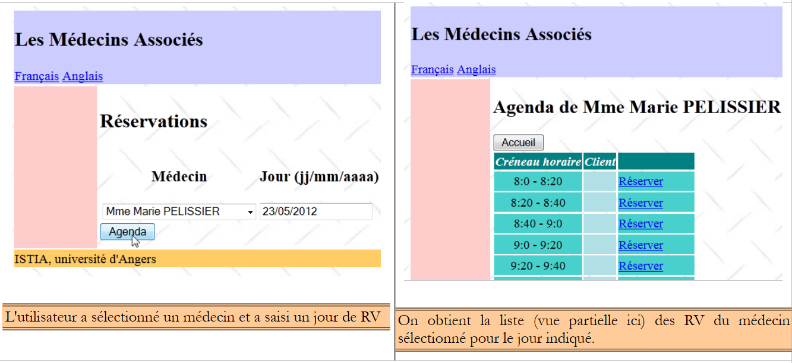 |
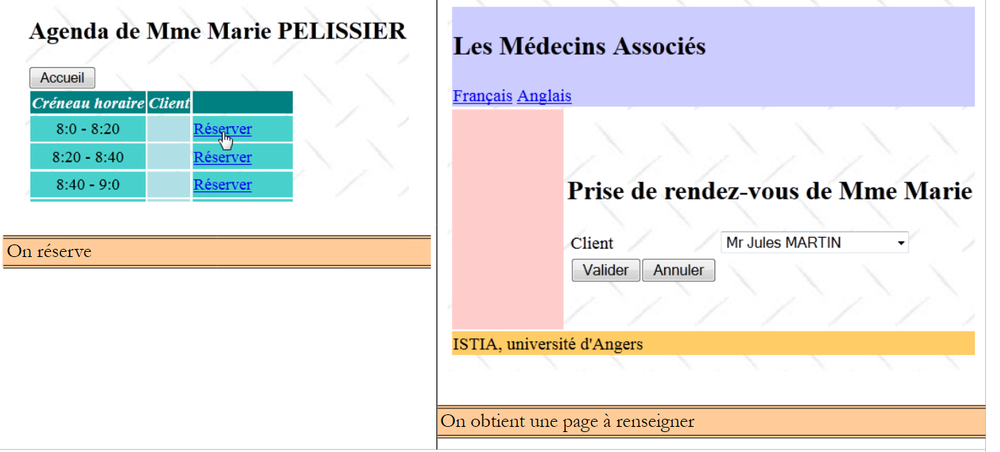 |
 |
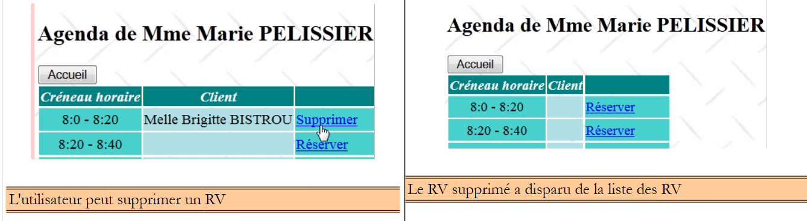 |
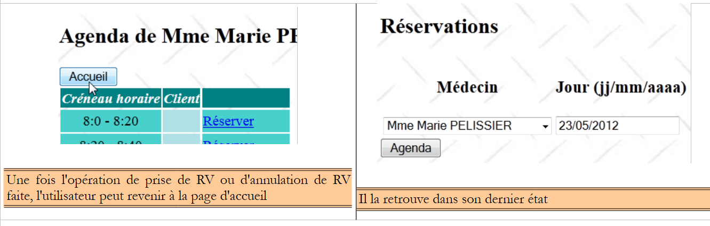 |
 |
وأخيرًا، قد تظهر أيضًا صفحة خطأ:
 |
يتم إنشاء هذه العروض المختلفة من خلال الصفحات التالية من مشروع الويب:
 |
- في [1]، تتولى الصفحات [basdepage، entete، layout] تنسيق جميع العروض،
- في [2]، يتم إنشاء العرض بواسطة [layout.xhtml].
تم استخدام تقنية Facelets هنا. وقد تم وصف ذلك في القسم 2.11. سنكتفي بتقديم الكود الخاص بصفحات XHTML المستخدمة للتخطيط:
[entete.xhtml]
<?xml version='1.0' encoding='UTF-8' ?>
<!DOCTYPE html PUBLIC "-//W3C//DTD XHTML 1.0 Transitional//EN" "http://www.w3.org/TR/xhtml1/DTD/xhtml1-transitional.dtd">
<html xmlns="http://www.w3.org/1999/xhtml"
xmlns:h="http://java.sun.com/jsf/html"
xmlns:f="http://java.sun.com/jsf/core"
xmlns:ui="http://java.sun.com/jsf/facelets">
<body>
<h2><h:outputText value="#{msg['layout.entete']}"/></h2>
<div align="left">
<h:commandLink value="#{msg['layout.entete.langue1']}" actionListener="#{changeLocale.setFrenchLocale}"/>
<h:outputText value=" "/>
<h:commandLink value="#{msg['layout.entete.langue2']}" actionListener="#{changeLocale.setEnglishLocale}"/>
</div>
</body>
</html>
لاحظ الأسطر 10–12، الرابطان لتغيير لغة التطبيق.
[basdepage.xhtml]
<?xml version='1.0' encoding='UTF-8' ?>
<!DOCTYPE html PUBLIC "-//W3C//DTD XHTML 1.0 Transitional//EN" "http://www.w3.org/TR/xhtml1/DTD/xhtml1-transitional.dtd">
<html xmlns="http://www.w3.org/1999/xhtml"
xmlns:h="http://java.sun.com/jsf/html">
<body>
<h:outputText value="#{msg['layout.basdepage']}"/>
</body>
</html>
[layout.xhtml]
<?xml version='1.0' encoding='UTF-8' ?>
<!DOCTYPE html PUBLIC "-//W3C//DTD XHTML 1.0 Transitional//EN" "http://www.w3.org/TR/xhtml1/DTD/xhtml1-transitional.dtd">
<html xmlns="http://www.w3.org/1999/xhtml"
xmlns:h="http://java.sun.com/jsf/html"
xmlns:f="http://java.sun.com/jsf/core"
xmlns:ui="http://java.sun.com/jsf/facelets">
<f:view locale="#{changeLocale.locale}">
<h:head>
<title>RdvMedecins</title>
<h:outputStylesheet library="css" name="styles.css"/>
</h:head>
<h:body style="background-image: url('${request.contextPath}/resources/images/standard.jpg');">
<h:form id="formulaire">
<table style="width: 1200px">
<tr>
<td colspan="2" bgcolor="#ccccff">
<ui:include src="entete.xhtml"/>
</td>
</tr>
<tr>
<td style="width: 100px; height: 200px" bgcolor="#ffcccc">
</td>
<td>
<ui:insert name="contenu" >
<h2>المحتوى</h2>
</ui:insert>
</td>
</tr>
<tr bgcolor="#ffcc66">
<td colspan="2">
<ui:include src="basdepage.xhtml"/>
</td>
</tr>
</table>
</h:form>
</h:body>
</f:view>
</html>
هذه الصفحة هي القالب لصفحة [index.xhtml]:
<?xml version='1.0' encoding='UTF-8' ?>
<!DOCTYPE html PUBLIC "-//W3C//DTD XHTML 1.0 Transitional//EN" "http://www.w3.org/TR/xhtml1/DTD/xhtml1-transitional.dtd">
<html xmlns="http://www.w3.org/1999/xhtml"
xmlns:h="http://java.sun.com/jsf/html"
xmlns:f="http://java.sun.com/jsf/core"
xmlns:ui="http://java.sun.com/jsf/facelets">
<ui:composition template="layout.xhtml">
<ui:define name="contenu">
<h:panelGroup rendered="#{form.form1Rendered}">
<ui:include src="form1.xhtml"/>
</h:panelGroup>
<h:panelGroup rendered="#{form.form2Rendered}">
<ui:include src="form2.xhtml"/>
</h:panelGroup>
<h:panelGroup rendered="#{form.form3Rendered}">
<ui:include src="form3.xhtml"/>
</h:panelGroup>
<h:panelGroup rendered="#{form.erreurRendered}">
<ui:include src="erreur.xhtml"/>
</h:panelGroup>
</ui:define>
</ui:composition>
</html>
تحدد الأسطر 8–21 المنطقة المسماة "content" (السطر 8) في [layout.xhtml] (السطر 7). هذه هي المنطقة المركزية للعروض:
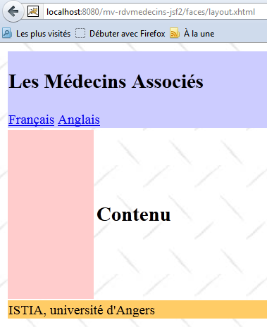 |
صفحة [index.xhtml] هي الصفحة الوحيدة في التطبيق. لذلك، لن يكون هناك تنقل بين الصفحات. تعرض إحدى الصفحات الأربع [form1.xhtml، form2.xhtml، form3.xhtml، error.xhtml]. يتم التحكم في هذا العرض بواسطة أربعة قيم منطقية [form1Rendered، form2Rendered، form3Rendered، errorRendered] من حبة النموذج، والتي سنصفها بعد قليل.
3.6.5. حبوب المشروع
 |
تم عرض الفئات الموجودة في حزمة [utils] سابقًا:
- فئة [ChangeLocale] هي الفئة التي تتولى تبديل اللغة. وقد تمت مناقشتها بالفعل (القسم 2.4.4).
- فئة [Messages] هي فئة تسهل تدويل رسائل التطبيق. وقد تمت مناقشتها في القسم 2.8.5.7.
3.6.5.1. حبة التطبيق
حبة [Application] هي كما يلي:
package beans;
استيراد java.util.ArrayList؛
استيراد java.util.HashMap؛
استيراد java.util.List؛
استيراد java.util.Map؛
استيراد javax.annotation.PostConstruct؛
استيراد javax.ejb.EJB؛
استيراد javax.enterprise.context.ApplicationScoped؛
استيراد javax.inject.Named؛
استيراد rdvmedecins.jpa.Client؛
استيراد rdvmedecins.jpa.Medecin؛
استيراد rdvmedecins.metier.service.IMetierLocal؛
@Named(value = "application")
@ApplicationScoped
فئة عامة Application تنفذ Serializable{
// طبقة الأعمال
@EJB
private IMetierLocal metier;
// ذاكرة التخزين المؤقت
قائمة خاصة <Medecin> medecins;
قائمة خاصة <Client> clients;
خريطة خاصة <Long, Medecin> hMedecins = خريطة هاش جديدة <Long, Medecin>();
خاص Map<Long, Client> hClients = جديد HashMap<Long, Client>();
// الأخطاء
قائمة خاصة <Erreur> أخطاء = قائمة صفيفية جديدة <Erreur>();
خاص Boolean خطأ = false;
public Application() {
}
@PostConstruct
public void init() {
// تخزين الأطباء والعملاء مؤقتًا
try {
medecins = metier.getAllMedecins();
clients = metier.getAllClients();
} catch (Throwable th) {
// نسجل الخطأ
erreur = true;
erreurs.add(new Erreur(th.getClass().getName(), th.getMessage()));
بينما (th.getCause() != null) {
th = th.getCause();
erreurs.add(new Erreur(th.getClass().getName(), th.getMessage()));
}
return;
}
// فحص القائمة
if (medecins.size() == 0) {
// نسجل الخطأ
erreur = true;
erreurs.add(new Erreur("", "قائمة الأطباء فارغة"));
}
إذا (clients.size() == 0) {
// نسجل الخطأ
erreur = true;
erreurs.add(new Erreur("", "قائمة العملاء فارغة"));
}
// خطأ؟
إذا (erreur) {
return;
}
// القواميس
for (طبيب m : الأطباء) {
hMedecins.put(m.getId(), m);
}
for (Client c : clients) {
hClients.put(c.getId(), c);
}
}
// متغيرات القراءة والكتابة
...
}
- السطران 15-16: فئة [Application] هي حبة في نطاق التطبيق. يتم إنشاؤها مرة واحدة في بداية دورة حياة تطبيق JSF ويمكن الوصول إليها من قبل جميع الطلبات من جميع المستخدمين. عادةً ما نقوم بتخزين البيانات للقراءة فقط في التطبيق. هنا، سنقوم بتخزين قائمة الأطباء وقائمة العملاء. لذلك نفترض أن هذه البيانات لا تتغير كثيرًا. تصل صفحات XHTML إليها عبر اسم التطبيق،
- السطران 20-21: سيتم إدخال مرجع إلى الواجهة المحلية لـ EJB [Business] بواسطة حاوية EJB في GlassFish. دعونا نراجع بنية التطبيق:
 |
سيتم تشغيل تطبيق JSF و EJB [Metier] في نفس JVM (آلة Java الافتراضية). لذلك، ستستخدم طبقة [JSF] الواجهة المحلية لـ EJB. هنا، يستخدم bean التطبيق EJB [Business]. حتى لو لم يكن الأمر كذلك، فمن الطبيعي العثور على مرجع له في طبقة [business]. هذه بالفعل معلومات يمكن مشاركتها من قبل جميع الطلبات من جميع المستخدمين، وبالتالي بيانات ذات نطاق التطبيق.
- السطور 34-35: يتم تنفيذ طريقة init فور إنشاء مثيل لفئة [Application] (وجود تعليق @PostConstruct).
- الأسطر 36-73: تنشئ الطريقة العناصر التالية: قائمة الأطباء في السطر 23، وقائمة العملاء في السطر 24، وقاموس الأطباء المفهرس حسب معرفهم في السطر 25، ونفس الشيء بالنسبة للعملاء في السطر 26. قد تحدث أخطاء. يتم تسجيل هذه الأخطاء في القائمة الموجودة في السطر 28.
فئة [Error] هي كما يلي:
package beans;
فئة عامة Erreur {
public Erreur() {
}
// حقل
خاص String classe;
خاص String رسالة;
// المصنع
public Erreur(String classe, String message){
this.setClasse(classe);
this.message=message;
}
// متغيرات القراءة والكتابة
...
}
- السطر 9: اسم فئة الاستثناء في حالة حدوث استثناء،
- السطر 10: رسالة خطأ.
3.6.5.2. حبة [Form]
فيما يلي كودها:
حزمة beans؛
...
@Named(value = "form")
@SessionScoped
فئة عامة Form تنفذ Serializable {
public Form() {
}
// حبة التطبيق
@Inject
تطبيق خاص؛
// النموذج
private Long idMedecin;
خاص Date jour = Date جديد();
خاص Boolean form1Rendered = true;
خاص Boolean تم عرض النموذج 2 = false;
خاص Boolean تم عرض النموذج 3 = false;
خاص Boolean erreurRendered = false;
سلسلة خاصة form2Titre؛
سلسلة خاصة form3Titre؛
أجندة الطبيب اليومية الخاصة agendaMedecinJour;
خاص Long idCreneau؛
خاص Medecin medecin;
خاص Client client;
خاص Long idClient؛
خاص CreneauMedecinJour creneauChoisi؛
قائمة خاصة <Erreur> erreurs؛
@PostConstruct
خاص void init() {
// هل نجحت عملية التهيئة؟
if (application.getErreur()) {
// استرداد قائمة الأخطاء
erreurs = application.getErreurs();
// يتم عرض شاشة الأخطاء
setForms(false, false, false, true);
}
}
// عرض الشاشة
private void setForms(Boolean form1Rendered, Boolean form2Rendered, Boolean form3Rendered, Boolean erreurRendered) {
this.form1Rendered = form1Rendered;
this.form2Rendered = form2Rendered;
this.form3Rendered = form3Rendered;
this.erreurRendered = erreurRendered;
}
.................................................
}
- الأسطر 5-7: فئة [Form] هي عنصر bean باسم "form" بنطاق الجلسة. لاحظ أن الفئة يجب أن تكون قابلة للتسلسل.
- السطران 13-14: يحتوي «فورم بين» على مرجع إلى «أبليكايشن بين». سيتم حقن هذا المرجع بواسطة حاوية السيرفلت التي يعمل عليها التطبيق (وجود علامة @Inject).
- الأسطر 17-31: قوالب الصفحات [form1.xhtml، form2.xhtml، form3.xhtml، error.xhtml]. يتم التحكم في عرض هذه الصفحات بواسطة القيم المنطقية في الأسطر 19-22. لاحظ أنه بشكل افتراضي، يتم عرض الصفحة [form1.xhtml]،
- السطور 33–34: يتم تنفيذ طريقة init فور إنشاء مثيل للفئة (وجود تعليق @PostConstruct)،
- الأسطر 35–41: تُستخدم طريقة init لتحديد الصفحة التي يجب عرضها أولاً: عادةً ما تكون الصفحة [form1.xhtml] (السطر 19) ما لم تفشل تهيئة التطبيق (السطر 36)، وفي هذه الحالة سيتم عرض الصفحة [error.xhtml] (السطر 40).
صفحة [error.xhtml] هي كما يلي:
<?xml version='1.0' encoding='UTF-8' ?>
<!DOCTYPE html PUBLIC "-//W3C//DTD XHTML 1.0 Transitional//EN" "http://www.w3.org/TR/xhtml1/DTD/xhtml1-transitional.dtd">
<html xmlns="http://www.w3.org/1999/xhtml"
xmlns:h="http://java.sun.com/jsf/html"
xmlns:f="http://java.sun.com/jsf/core"
xmlns:ui="http://java.sun.com/jsf/facelets">
<body>
<h2><h:outputText value="#{msg['erreur.titre']}"/></h2>
<p>
<h:commandButton value="#{msg['erreur.accueil']}" actionListener="#{form.accueil()}"/>
</p>
<hr/>
<h:dataTable value="#{form.erreurs}" var="erreur" headerClass="erreursHeaders" columnClasses="erreurClasse,erreurMessage">
<h:column>
<f:facet name="header">
<h:outputText value="#{msg['erreur.classe']}"/>
</f:facet>
<h:outputText value="#{erreur.classe}"/>
</h:column>
<h:column>
<f:facet name="header">
<h:outputText value="#{msg['erreur.message']}"/>
</f:facet>
<h:outputText value="#{erreur.message}"/>
</h:column>
</h:dataTable>
</body>
</html>
يستخدم علامة <h:dataTable> (الأسطر 14–27) لعرض قائمة الأخطاء. وينتج عن ذلك صفحة مشابهة لما يلي:

سنقوم الآن بتحديد المراحل المختلفة لدورة حياة التطبيق.
3.6.6. التفاعلات بين الصفحات والنموذج
3.6.6.1. عرض الصفحة الرئيسية
إذا سارت الأمور على ما يرام، فإن الصفحة الأولى التي يتم عرضها هي [form1.xhtml]. وينتج عن ذلك العرض التالي:
|
صفحة [form1.xhtml] هي كما يلي:
<?xml version='1.0' encoding='UTF-8' ?>
<!DOCTYPE html PUBLIC "-//W3C//DTD XHTML 1.0 Transitional//EN" "http://www.w3.org/TR/xhtml1/DTD/xhtml1-transitional.dtd">
<html xmlns="http://www.w3.org/1999/xhtml"
xmlns:h="http://java.sun.com/jsf/html"
xmlns:f="http://java.sun.com/jsf/core"
xmlns:ui="http://java.sun.com/jsf/facelets">
<body>
<h2><h:outputText value="#{msg['form1.titre']}"/></h2>
<h:panelGrid columns="3">
<h:panelGroup>
<div align="center"><h3><h:outputText value="#{msg['form1.medecin']}"/></h3></div>
</h:panelGroup>
<h:panelGroup>
<div align="center"><h3><h:outputText value="#{msg['form1.jour']}"/></h3></div>
</h:panelGroup>
<h:panelGroup/>
<h:selectOneMenu value="#{form.idMedecin}">
<f:selectItems value="#{form.medecins}" var="medecin" itemLabel="#{medecin.titre} #{medecin.prenom} #{medecin.nom}" itemValue="#{medecin.id}"/>
</h:selectOneMenu>
<h:inputText id="jour" value="#{form.jour}" required="true" requiredMessage="#{msg['form1.jour.required']}" converterMessage="#{msg['form1.jour.erreur']}">
<f:convertDateTime pattern="dd/MM/yyyy"/>
</h:inputText>
<h:message for="jour" styleClass="error"/>
</h:panelGrid>
<h:commandButton value="#{msg['form1.button.agenda']}" actionListener="#{form.getAgenda}"/>
</body>
</html>
هذه الصفحة مدعومة بالنموذج التالي:
@Named(value = "form")
@SessionScoped
فئة عامة Form تنفذ Serializable {
// bean Application
@Inject
تطبيق خاص؛
// النموذج
private Long idMedecin;
private Date jour = new Date();
// قائمة الأطباء
قائمة عامة <Medecin> getMedecins() {
return application.getMedecins();
}
// جدول الأعمال
public void getAgenda() {
...
}
- يقرأ الحقل الموجود في السطر 9 من قيمة القائمة الموجودة في السطر 18 من الصفحة ويكتب إليها. عند تحميل الصفحة لأول مرة، يتم تعيين القيمة المحددة في مربع القائمة المنسدلة. عند التحميل الأولي، تكون قيمة idMedecin مساوية لـ null، لذا سيتم تحديد الطبيب الأول.
- تقوم الطريقة الموجودة في الأسطر 13-15 بإنشاء العناصر لقائمة الأطباء المنسدلة (السطر 19 من الصفحة). وسيكون لكل خيار تم إنشاؤه عنوانًا (itemLabel) يتألف من لقب الطبيب واسمه الأخير واسمه الأول، وقيمة (itemValue) تتمثل في معرّف الطبيب،
- يوفر الحقل الموجود في السطر 10 حق الوصول للقراءة/الكتابة إلى حقل الإدخال الموجود في السطر 21 من الصفحة. عند العرض الأولي، يتم عرض التاريخ الحالي،
- الأسطر 17-19: تتولى طريقة getAgenda معالجة النقر على زر [Agenda] في السطر 26 من الصفحة. نظرًا لعدم وجود تنقل (يتم طلب صفحة [index.html] دائمًا)، فسنستخدم غالبًا السمة actionListener بدلاً من السمة action. في هذه الحالة، لا تُرجع الطريقة التي يتم استدعاؤها في النموذج أي نتيجة.
عند النقر على زر [Agenda]،
- يتم إرسال القيم: يتم تخزين القيمة المحددة في القائمة المنسدلة للأطباء في حقل idMedecin في النموذج، واليوم المحدد في حقل اليوم؛
- يتم استدعاء طريقة getAgenda الخاصة بالنموذج.
طريقة getAgenda هي كما يلي:
// bean Application
@Inject
private Application application;
// النموذج
private Long idMedecin;
خاص Date jour = Date جديد();
خاص Boolean form1Rendered = true;
خاص Boolean تم عرض النموذج 2 = false;
خاص Boolean تم عرض النموذج 3 = false;
خاص Boolean erreurRendered = false;
سلسلة خاصة form2Titre؛
أجندة الطبيب اليومية الخاصة agendaMedecinJour؛
طبيب خاص medecin;
قائمة خاصة <Erreur> erreurs;
// جدول المواعيد
public void getAgenda() {
حاول {
// نسترد الطبيب
medecin = application.gethMedecins().get(idMedecin);
// نموذج العنوان 2
form2Titre = Messages.getMessage(null, "form2.titre", new Object[]{medecin.getTitre(), medecin.getPrenom(), medecin.getNom(), new SimpleDateFormat("dd MMM yyyy").format(jour)}).getSummary();
// مذكرات الطبيب ليوم معين
agendaMedecinJour = application.getMetier().getAgendaMedecinJour(medecin, jour);
// يتم عرض النموذج 2
setForms(false, true, false, false);
} catch (Throwable th) {
// عرض الخطأ
prepareVueErreur(th);
}
}
// إعداد vueErreur
private void prepareVueErreur(Throwable th) {
// إنشاء قائمة بالأخطاء
erreurs = new ArrayList<Erreur>();
erreurs.add(new Erreur(th.getClass().getName(), th.getMessage()));
بينما (th.getCause() != null) {
th = th.getCause();
erreurs.add(new Erreur(th.getClass().getName(), th.getMessage()));
}
// يتم عرض عرض الخطأ
setForms(false, false, false, true);
}
دعونا نراجع ما يجب أن تعرضه طريقة getAgenda:
 |
- السطر 21: نسترد الطبيب المحدد من قاموس الأطباء المخزن في حبة التطبيق. للقيام بذلك، نستخدم معرّفه، الذي تم إرساله إلى idMedecin،
- السطر 23: نقوم بإعداد عنوان الصفحة [form2.xhtml] التي سيتم عرضها. يتم استرداد هذه الرسالة من ملف الرسائل بحيث يمكن ترجمتها. تم وصف هذه التقنية في القسم 2.8.5.7، الصفحة 135.
- السطر 25: نستدعي طبقة [business] لحساب جدول مواعيد الطبيب المحدد لليوم المحدد،
- السطر 27: يتم عرض [form2.xhtml]،
- السطر 28: في حالة حدوث استثناء، يتم إنشاء قائمة أخطاء (الأسطر 37–42) ويتم عرض الصفحة [error.xhtml] (السطر 44).
3.6.6.2. عرض جدول مواعيد الطبيب
تتوافق الصفحة [form2.xhtml] مع العرض التالي:
 |
فيما يلي كود صفحة [form2.xhtml]:
<?xml version='1.0' encoding='UTF-8' ?>
<!DOCTYPE html PUBLIC "-//W3C//DTD XHTML 1.0 Transitional//EN" "http://www.w3.org/TR/xhtml1/DTD/xhtml1-transitional.dtd">
<html xmlns="http://www.w3.org/1999/xhtml"
xmlns:h="http://java.sun.com/jsf/html"
xmlns:f="http://java.sun.com/jsf/core"
xmlns:ui="http://java.sun.com/jsf/facelets"
xmlns:c="http://java.sun.com/jsp/jstl/core">
<body>
<h2><h:outputText value="#{form.form2Titre}"/></h2>
<h:commandButton value="#{msg['form2.accueil']}" action="#{form.accueil}" />
<h:dataTable value="#{form.agendaMedecinJour.creneauxMedecinJour}" var="creneauMedecinJour" headerClass="reservationsHeaders" columnClasses="creneau,client,action">
<h:column>
<f:facet name="header">
<h:outputText value="#{msg['form2.creneauHoraire']}"/>
</f:facet>
<h:outputText value="#{creneauMedecinJour.creneau.hdebut}:#{creneauMedecinJour.creneau.mdebut} - #{creneauMedecinJour.creneau.hfin}:#{creneauMedecinJour.creneau.mfin}" />
</h:column>
<h:column>
<f:facet name="header">
<h:outputText value="#{msg['form2.client']}"/>
</f:facet>
<c:if test="#{creneauMedecinJour.rv==null}">
<h:outputText value=""/>
<c:otherwise>
<h:outputText value="#{creneauMedecinJour.rv.client.titre} #{creneauMedecinJour.rv.client.prenom} #{creneauMedecinJour.rv.client.nom}"/>
</c:otherwise>
</c:if>
</h:column>
<h:column>
<f:facet name="header"/>
<h:commandLink action="#{form.action()}" value="#{creneauMedecinJour.rv==null ? msg['form2.reserver'] : msg['form2.supprimer']}">
<f:setPropertyActionListener value="#{creneauMedecinJour.creneau.id}" target="#{form.idCreneau}"/>
</h:commandLink>
</h:column>
</h:dataTable>
</body>
</html>
تذكر أن طريقة getAgenda قامت بتهيئة حقلين في النموذج:
// النموذج
private String form2Titre;
private AgendaMedecinJour agendaMedecinJour;
يملأ هذان الحقلان صفحة [form2.xhtml]:
- السطر 10، عنوان الصفحة،
- السطر 12: يتم عرض جدول مواعيد الطبيب باستخدام علامة <h:dataTable> ذات ثلاثة أعمدة،
- الأسطر 13–18: يعرض العمود الأول الفترات الزمنية،
- الأسطر 19–30: يعرض العمود الثاني اسم العميل الذي قد يكون حجز الفترة الزمنية، أو لا شيء إذا لم يكن هناك حجز. لإجراء هذا الاختيار، نستخدم علامات من مكتبة JSTL Core المشار إليها في السطر 7،
- الأسطر 30–35: يعرض العمود الثالث رابط [حجز] إذا كانت الفترة الزمنية متاحة، ورابط [حذف] إذا كانت الفترة الزمنية محجوزة.
الروابط الموجودة في العمود الثالث مرتبطة بالقالب التالي:
// نموذج
private Long idCreneau;
// إجراء على RV
public void action() {
...
}
- يتم استدعاء طريقة action عندما ينقر المستخدم على رابط "حجز / حذف" (السطر 32). لاحظ أن سمة action مستخدمة هنا. يجب أن يكون للطريقة التي تشير إليها هذه السمة التوقيع String action() لأن الطريقة يجب أن تُرجع مفتاح تنقل. ومع ذلك، فهي هنا void action(). لم يتسبب هذا في حدوث خطأ ، ويمكننا أن نفترض أنه في هذه الحالة لا يوجد تنقل. وهذا هو المقصود. تسبب استخدام actionListener بدلاً من action في حدوث خلل،
- سيسترد الحقل `idCreneau` في السطر 2 معرف الفترة الزمنية المرتبطة بالرابط الذي تم النقر عليه (السطر 33 من الصفحة).
3.6.6.3. حذف موعد
دعونا نفحص الكود الذي يتعامل مع حذف موعد. وهذا يتوافق مع تسلسل العروض التالي:
 |
الرمز المستخدم في هذه العملية هو كما يلي:
// bean Application
@Inject
private Application application;
// النموذج
خاص Boolean form1Rendered = true;
خاص Boolean form2Rendered = false;
خاص Boolean تم عرض النموذج 3 = false;
خاص Boolean erreurRendered = false;
أجندة الطبيب اليومية الخاصة agendaMedecinJour;
خاص Long idCreneau؛
خاص CreneauMedecinJour creneauChoisi؛
قائمة خاصة <Erreur> erreurs;
// إجراء على RV
public void action() {
// البحث عن الفترة الزمنية في التقويم
int i = 0;
Boolean trouvé = false;
while (!trouvé && i < agendaMedecinJour.getCreneauxMedecinJour().length) {
if (agendaMedecinJour.getCreneauxMedecinJour()[i].getCreneau().getId() == idCreneau) {
trouvé = true;
} else {
i++;
}
}
// هل وجدنا؟
if (!trouvé) {
// هذا غريب - يتم إعادة عرض النموذج 2
setForms(false, true, false, false);
return;
}
// وجدنا
creneauChoisi = agendaMedecinJour.getCreneauxMedecinJour()[i];
// وفقًا للإجراء المطلوب
if (creneauChoisi.getRv() == null) {
reserver();
} else {
supprimer();
}
}
// الحجز
public void الحجز() {
...
}
public void suppression() {
try {
// حذف موعد
application.getMetier().supprimerRv(creneauChoisi.getRv());
// تحديث جدول المواعيد
agendaMedecinJour = application.getMetier().getAgendaMedecinJour(medecin, jour);
// يتم عرض النموذج 2
setForms(false, true, false, false);
} catch (Throwable th) {
// عرض الخطأ
prepareVueErreur(th);
}
}
- السطر 16: عند بدء طريقة الإجراء، يكون معرف الفترة الزمنية المحددة قد تم تخزينه في idCreneau (السطر 11)،
- الأسطر 18–26: نحاول استرداد الفترة الزمنية بناءً على معرفها (السطر 21). نبحث عنها في التقويم الحالي، agendaMedecinJour، من السطر 10. عادةً، يجب أن نجدها. إذا لم نجدها، لا نفعل شيئًا (الأسطر 28–32)،
- السطر 34: إذا تم العثور على الفترة الزمنية، نسترد مرجعًا لها ونخزنه في السطر 12،
- السطر 36: نتحقق مما إذا كان هناك موعد في الفترة الزمنية المحددة. إذا كان الأمر كذلك، نحذفه (السطر 39)؛ وإلا، نحجز موعدًا (السطر 37)،
- السطر 51: يتم حذف الموعد في الفترة الزمنية المحددة. تتولى طبقة [الأعمال] معالجة ذلك،
- السطر 53: نطلب الجدول الزمني المحدث للطبيب من طبقة [الأعمال]. وبالطبع، سنرى موعدًا أقل هناك. ولكن نظرًا لأن التطبيق متعدد المستخدمين، فقد نرى التغييرات التي أجراها مستخدمون آخرون،
- السطر 55: يتم إعادة عرض الصفحة [form2.xhtml]،
- السطر 58: نظرًا لاستدعاء طبقة [business]، قد تحدث استثناءات. في هذه الحالة، نقوم بتخزين مكدس الاستثناءات في قائمة الأخطاء في السطر 13 وعرضها باستخدام طريقة العرض [error.xhtml].
3.6.6.4. جدولة المواعيد
يتبع جدولة المواعيد التسلسل التالي:
 |
النموذج المستخدم في هذا الإجراء هو كما يلي:
// النموذج
private Date jour = new Date();
private Boolean form1Rendered = true;
private Boolean form2Rendered = false;
خاص Boolean تم عرض النموذج 3 = false;
خاص Boolean erreurRendered = false;
خاص String عنوان_النموذج_3;
أجندة الطبيب اليومية الخاصة agendaMedecinJour;
خاص Medecin medecin;
خاص CreneauMedecinJour creneauChoisi;
قائمة خاصة <Erreur> أخطاء؛
// إجراء على RV
public void action() {
...
// وجدنا
creneauChoisi = agendaMedecinJour.getCreneauxMedecinJour()[i];
// وفقًا للإجراء المطلوب
if (creneauChoisi.getRv() == null) {
reserver();
} else {
supprimer();
}
}
// الحجز
public void الحجز() {
حاول {
// عنوان النموذج 3
form3Titre = Messages.getMessage(null, "form3.titre", new Object[]{medecin.getTitre(), medecin.getPrenom(), medecin.getNom(), new SimpleDateFormat("dd MMM yyyy").format(jour),
creneauChoisi.getCreneau().getHdebut(), creneauChoisi.getCreneau().getMdebut(), creneauChoisi.getCreneau().getHfin(), creneauChoisi.getCreneau().getMfin()}).getSummary();
// العميل المحدد في القائمة المنسدلة
idClient=null;
// يتم عرض النموذج 3
setForms(false, false, true, false);
} catch (Throwable th) {
// عرض الخطأ
prepareVueErreur(th);
}
}
- السطر 14: إذا لم يكن هناك موعد في الفترة الزمنية المحددة، فهذا يعني أنه حجز،
- السطر 30: نقوم بإعداد عنوان الصفحة [form3.xhtml] باستخدام نفس التقنية المستخدمة في عنوان الصفحة [form2.xhtml]،
- السطر 34: في هذا النموذج، يوجد مربع قائمة منسدلة يتم ملء قيمته بواسطة idClient. نضبط قيمة هذا الحقل على null بحيث لا يتم تحديد أي خيار،
- السطر 36: نعرض الصفحة [form3.xhtml]،
- السطر 39: أو صفحة الخطأ في حالة حدوث استثناء.
الصفحة [form3.xhtml] هي كما يلي:
<?xml version='1.0' encoding='UTF-8' ?>
<!DOCTYPE html PUBLIC "-//W3C//DTD XHTML 1.0 Transitional//EN" "http://www.w3.org/TR/xhtml1/DTD/xhtml1-transitional.dtd">
<html xmlns="http://www.w3.org/1999/xhtml"
xmlns:h="http://java.sun.com/jsf/html"
xmlns:f="http://java.sun.com/jsf/core"
xmlns:ui="http://java.sun.com/jsf/facelets">
<body>
<h2><h:outputText value="#{form.form3Titre}"/></h2>
<h:panelGrid columns="2">
<h:outputText value="#{msg['form3.client']}"/>
<h:selectOneMenu value="#{form.idClient}">
<f:selectItems value="#{form.clients}" var="client" itemLabel="#{client.titre} #{client.prenom} #{client.nom}" itemValue="#{client.id}"/>
</h:selectOneMenu>
<h:panelGroup>
<h:commandButton value="#{msg['form3.valider']}" actionListener="#{form.validerRv}" />
<h:commandButton value="#{msg['form3.annuler']}" actionListener="#{form.annulerRv}"/>
</h:panelGroup>
</h:panelGrid>
</body>
</html>
هذه الصفحة مدعومة بالنموذج التالي:
// bean Application
@Inject
تطبيق خاص؛
// النموذج
private Long idClient;
// قائمة العملاء
public List<Client> getClients() {
return application.getClients();
}
- السطر 6: يقوم معرف العميل بتعبئة سمة القيمة لمربع القائمة المنسدلة الخاص بالعميل في السطر 12 من الصفحة. ويقوم بتعيين عنصر مربع القائمة المنسدلة المحدد،
- الأسطر 9-11: تعمل طريقة getClients على ملء القائمة المنسدلة (السطر 13). التسمية (itemLabel) لكل خيار هي [العنوان الاسم الأول الاسم الأخير] للعميل، والقيمة المرتبطة (itemValue) هي معرف العميل. وبالتالي، فإن هذه القيمة هي التي سيتم إرسالها.
3.6.6.5. تأكيد الموعد
تتبع عملية تأكيد الموعد التسلسل التالي:
 |
ويتم ذلك بالنقر على زر [تأكيد]:
<h:commandButton value="#{msg['form3.valider']}" actionListener="#{form.validerRv}" />
وبالتالي، ستتولى طريقة [Form].validerRv معالجة هذا الحدث. وفيما يلي شفرة هذه الطريقة:
// bean Application
@Inject
private Application application;
// النموذج
private Date jour = new Date();
خاص Boolean form1Rendered = true;
خاص Boolean تم عرض النموذج 2 = false;
خاص Boolean تم عرض النموذج 3 = false;
خاص Boolean erreurRendered = false;
خاص Long idCreneau؛
خاص Long idClient؛
قائمة خاصة <Erreur> أخطاء؛
// التحقق من صحة rv
public void التحقق_من_صحة_القيمة() {
try {
// استرداد مثيل للفترة الزمنية المحددة
Creneau creneau = application.getMetier().getCreneauById(idCreneau);
// نضيف Rv
application.getMetier().ajouterRv(jour, creneau, application.gethClients().get(idClient));
// تحديث جدول الأعمال
agendaMedecinJour = application.getMetier().getAgendaMedecinJour(medecin, jour);
// يتم عرض النموذج 2
setForms(false, true, false, false);
} catch (Throwable th) {
// عرض الخطأ
prepareVueErreur(th);
}
}
- السطر 12: قبل تنفيذ طريقة `validerRv`، يكون الحقل `idClient` قد تلقى معرّف العميل الذي اختاره المستخدم،
- السطر 19: باستخدام معرف الفترة الزمنية المخزّن في خطوة سابقة (البيان هو نطاق الجلسة)، نطلب مرجعًا للفترة الزمنية نفسها من طبقة [الأعمال]،
- السطر 21: يُطلب من طبقة [الأعمال] إضافة موعد لليوم المحدد (day)، والفترة الزمنية المحددة (slot)، والعميل المحدد (idClient)،
- السطر 23: نطلب من طبقة [business] تحديث تقويم الطبيب. سنرى الموعد المضاف إلى جانب أي تغييرات قد يكون أجراها مستخدمون آخرون للتطبيق،
- السطر 25: يتم إعادة عرض التقويم [form2.xhtml]،
- السطر 28: عرض صفحة الخطأ في حالة حدوث خطأ.
3.6.6.6. إلغاء موعد
وهذا يتوافق مع التسلسل التالي:
 |
زر [إلغاء] في صفحة [form3.xhtml] هو كما يلي:
<h:commandButton value="#{msg['form3.annuler']}" actionListener="#{form.annulerRv}"/>
وبالتالي يتم استدعاء طريقة [Form].cancelAppointment:
// إلغاء حجز الموعد
public void annulerRv() {
// عرض النموذج 2
setForms(false, true, false, false);
}
3.6.6.7. العودة إلى الصفحة الرئيسية
هناك إجراء آخر يجب النظر إليه، في التسلسل التالي:
 |
فيما يلي كود زر [Home] في صفحة [form2.xhtml]:
<h:commandButton value="#{msg['form2.accueil']}" action="#{form.accueil}" />
طريقة [Form].accueil هي كما يلي:
public void accueil() {
// يتم عرض الصفحة الرئيسية
setForms(true, false, false, false);
}
3.7. الخلاصة
لقد قمنا بإنشاء التطبيق التالي:
 |
ركزنا على وظائف التطبيق بدلاً من واجهة المستخدم. وسيتم تحسين هذه الأخيرة باستخدام مكتبة مكونات PrimeFaces. لقد قمنا بإنشاء تطبيق أساسي يمثل مع ذلك بنية Java EE متعددة الطبقات باستخدام EJBs. ويمكن تحسين التطبيق بطرق مختلفة:
- المصادقة مطلوبة. ليس كل شخص مخولًا بإضافة أو حذف المواعيد،
- يجب أن نتمكن من التمرير للأمام وللخلف في التقويم عند البحث عن يوم به فترات متاحة،
- يجب أن يكون من الممكن طلب قائمة بالأيام التي تتوفر فيها مواعيد لدى الطبيب. في الواقع، إذا كان الطبيب أخصائي عيون، فعادةً ما يتم حجز المواعيد قبل ستة أشهر،
- ...
3.8. الاختبار باستخدام Eclipse
3.8.1. طبقة [DAO]
 |
- في [1]، قم باستيراد مشروع EJB الخاص بطبقة [DAO] وعميلها،
- في [2]، نختار مشروع EJB الخاص بطبقة [DAO] ونقوم بتشغيله [3]،
- في [4]، قم بتشغيله على الخادم،
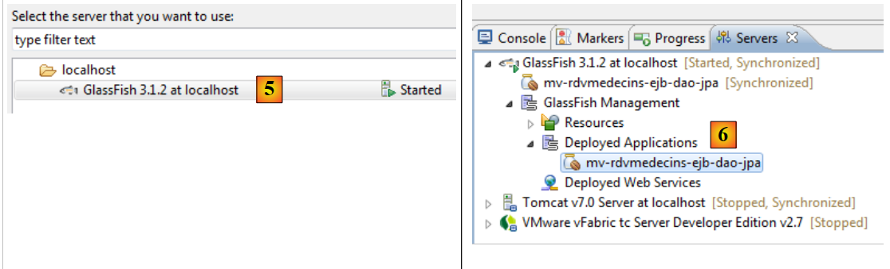 |
- في [5]، لا يتوفر سوى خادم Glassfish لأنه الخادم الوحيد الذي يحتوي على حاوية EJB،
- في [6]، تم نشر وحدة EJB،
 |
- في [7]، يتم عرض السجلات:
هذه هي تلك التي كانت لدينا مع NetBeans.
 |
- في [7A] [7B] نقوم بتشغيل اختبار JUnit الخاص بالعميل،
 |
- في [8]، نجح الاختبار،
- في [9]، يتم تسجيل سجلات وحدة التحكم.
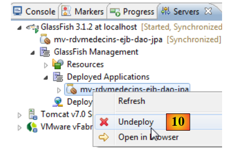 |
في [10]، يتم إلغاء تحميل تطبيق EJB.
3.8.2. طبقة [الأعمال]
 |
- في [1]، قم باستيراد المشاريع الأربعة لـ Maven من طبقة [الأعمال]،
- في [2]، حدد مشروع المؤسسة وقم بتشغيله في [3]، على خادم GlassFish [4] [5]،
 |
- في [6]، تم نشر مشروع المؤسسة على GlassFish،
 |
- في [7]، نلقي نظرة على سجلات GlassFish،
في السطر 3، نلاحظ الاسم القابل للنقل لـ EJB [Metier] ونلصقه في عميل وحدة التحكم لهذا EJB:
public class ClientRdvMedecinsMetier {
// اسم الواجهة البعيدة لـ EJB [Metier]
private static String IDaoRemoteName = "java:global/mv-rdvmedecins-metier-dao-ear/mv-rdvmedecins-ejb-metier-1.0-SNAPSHOT/Metier!rdvmedecins.metier.service.IMetierRemote";
// تاريخ اليوم
private static Date jour = new Date();
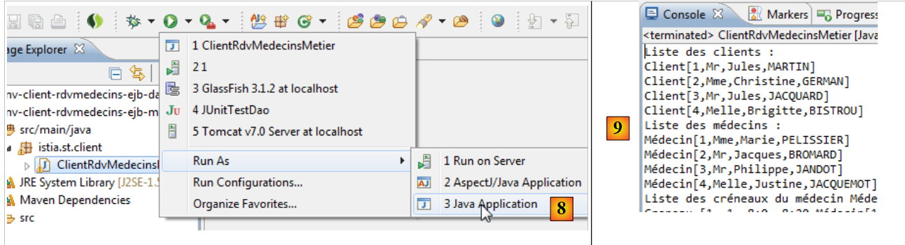 |
- في [8]، نقوم بتشغيل عميل وحدة التحكم،
- وفي [9]، سجلاته.
 |
- في [10]، يتم إلغاء تحميل تطبيق المؤسسة؛
3.8.3. طبقة [الويب]
 |
- في [1]، نقوم باستيراد المشاريع الثلاثة لـ Maven من طبقة [الويب]. المشروع الذي يحمل الامتداد .ear هو مشروع المؤسسة الذي يجب نشره على GlassFish،
- في [2]، نقوم بتشغيله،
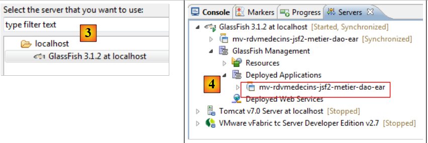 |
- على خادم GlassFish [3]،
- في [4]، تم نشر التطبيق المؤسسي بنجاح،
 |
- في [5]، ندخل عنوان URL للتطبيق في متصفح Eclipse الداخلي.